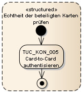
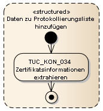

Elektronische Gesundheitskarte und Telematikinfrastruktur
Spezifikation Fachmodul VSDM
| Version | 2.7.0 |
| Revision | 571723 |
| Stand | 02.12.2022 |
| Status | freigegeben |
| Klassifizierung | öffentlich |
| Referenzierung | gemSpec_FM_VSDM |
Änderungen zur Vorversion
Anpassungen des vorliegenden Dokumentes im Vergleich zur Vorversion können Sie der nachfolgenden Tabelle entnehmen.
Dokumentenhistorie
| Version |
Stand |
Kap./ Seite |
Grund der Änderung, besondere Hinweise |
Bearbeitung |
|---|---|---|---|---|
| 2.1.0 |
02.08.17 |
Initialversion Online-Produktivbetrieb (Stufe 2.1) |
gematik |
|
| Ausbau LE-AdV, Änderungsliste P15.1 |
||||
| 2.2.0 |
18.12.17 |
Änderungen nach OPB1 R1.6.4-0 und OPB2.1 R2.1.0 |
gematik |
|
| 2.3.0 |
14.05.18 |
Änderungen gemäß P15.4 |
gematik |
|
| 2.4.0 |
26.10.18 |
Änderungen gemäß P15.9 |
gematik |
|
| 2.5.0 | 15.05.19 | Einarbeitung P18.1 |
gematik | |
| 2.6.0 |
12.10.20 |
Einarbeitung P22.2 |
gematik |
|
| 2.7.0 | 02.12.22 | Einarbeitung CI_Maintenance_22.5 und Konn_Maintenance_22.6 | gematik |
Das vorliegende Dokument spezifiziert den Produkttyp Fachmodul VSDM und beschreibt, wie die fachlichen Abläufe umzusetzen sind, indem die Umsetzungsanforderungen aus der Systemlösung VSDM verfeinert und zu Blattanforderungen für das Fachmodul VSDM ausgearbeitet werden.
Die Systemlösung der Fachanwendung VSDM ist im systemspezifischen Konzept [gemSysL_VSDM] beschrieben. Es setzt die fachlichen Anforderungen des Lastenheftes auf Systemebene um, zerlegt die Fachanwendung VSDM in die zugehörigen Produkttypen, darunter das Fachmodul VSDM, und definiert die Schnittstellen zwischen den einzelnen Produkttypen. Für das Verständnis dieser Spezifikation des Fachmoduls VSDM wird die Kenntnis von [gemSysL_VSDM] vorausgesetzt.
Die Anforderungen an den sicheren Transport der fachanwendungsspezifischen Daten zwischen Fachmodul VSDM und der Fachdienste VSDM werden separat in der Schnittstellenspezifikationen Transport VSDM [gemSpec_SST_VSDM] und Schnittstellenspezifikation Fachdienste (UFS/VSDD/CMS) [gemSpec_SST_FD_VSDM] behandelt.
Die Anforderungen an den Transport der fachanwendungsspezifischen Daten zwischen Fachmodul VSDM und dem Clientsystem werden separat in der Schnittstellenspezifikation Primärsysteme VSDM [gemSpec_SST_PS_VSDM] behandelt.
Die Abbildung 1 zeigt schematisch die Dokumentenhierarchie im Projekt VSDM, in welcher die Spezifikation Fachmodul und die Konzepte und Spezifikationen eingeordnet sind. Die Abbildung stellt nicht die vollständige Dokumentenhierarchie des Projekts Online-Produktivbetrieb (Stufe 1) oder den Trace der Anforderungen dar.
Abbildung 1: Dokumentenhierarchie im Projekt VSDM
In diesem Dokument wird einleitend in Kapitel 1 die Zielsetzung des Dokumentes, die notwendigen Grundlagen und die gewählten Methoden dargestellt.
Das Kapitel 2 enthält einen Systemüberblick zur besseren Einordnung des Fachmoduls.
Das Kapitel 3 spezifiziert das Verhalten der Schnittstellen.
Das Kapitel 4 spezifiziert die Funktionen und die funktionalen Eigenschaften des Fachmoduls VSDM.
Das Kapitel 5 spezifiziert die nicht-funktionalen Anforderungen.
Die Ausgangsanforderungen dieser Spezifikation und deren Zusammenhang zu den Anforderungen aus dem übergeordneten Konzepten und Spezifikationen werden tabellarisch in Anhang B dargestellt.
Das Dokument ist maßgeblich für Hersteller und Anbieter von Produkten für die Fachanwendung VSDM.
Dieses Dokument enthält normative Festlegungen zur Telematikinfrastruktur des deutschen Gesundheitswesens. Der Gültigkeitszeitraum der vorliegenden Version und deren Anwendung in Zulassungsverfahren wird durch die gematik GmbH in gesonderten Dokumenten (z. B. Dokumentenlandkarte, Produkttypsteckbrief, Leistungsbeschreibung) festgelegt und bekannt gegeben.
Schutzrechts-/Patentrechtshinweis
Die nachfolgende Spezifikation ist von der gematik allein unter technischen Gesichtspunkten erstellt worden. Im Einzelfall kann nicht ausgeschlossen werden, dass die Implementierung der Spezifikation in technische Schutzrechte Dritter eingreift. Es ist allein Sache des Anbieters oder Herstellers, durch geeignete Maßnahmen dafür Sorge zu tragen, dass von ihm aufgrund der Spezifikation angebotene Produkte und/oder Leistungen nicht gegen Schutzrechte Dritter verstoßen und sich ggf. die erforderlichen Erlaubnisse/Lizenzen von den betroffenen Schutzrechtsinhabern einzuholen. Die gematik GmbH übernimmt insofern keinerlei Gewährleistungen.
Grundlagen für die Ausführungen dieses Dokumentes sind
Innerhalb dieses Dokuments wird auf die technische Umsetzung der Anforderungen an das Fachmodul VSDM eingegangen. Anforderungen an andere Produkttypen sind nicht Bestandteil des Dokuments. Für Informationen zur Systemlösung wird auf das systemspezifische Konzept VSDM [gemSysL_VSDM] verwiesen.
Die Schnittstellen der Fachdienste VSDM sind in den Schnittstellenspezifikationen [gemSpec_SST_VSDM] und [gemSpec_SST_FD_VSDM], die Schnittstellen des Fachmoduls VSDM für das Primärsystem in [gemSpec_SST_PS_VSDM] beschrieben und spezifiziert. Sie werden hier nicht wiederholt. Die Kenntnis der Schnittstellen der Fachdienste und die Operationen GetUpdateFlags, PerformUpdates und GetNextCommandPackage werden vorausgesetzt.
Die vom vorliegenden Dokument referenzierten Technical Use Cases (TUC) des Konnektors sind in der Konnektorspezifikation [gemSpec_Kon] beschrieben.
Das hier spezifizierte Fachmodul VSDM ist nicht für den Einsatz in mobilen Kartenterminals vorgesehen. Die Anforderungen, die sich aus den fachlichen Abläufen im mobilen Einsatzszenario ergeben, sind in dem Dokument [gemSpec_MobKT_St2] beschrieben.
Anforderungen als Ausdruck normativer Festlegungen werden durch eine eindeutige ID in eckigen Klammern sowie die dem RFC 2119 [RFC2119] entsprechenden, in Großbuchstaben geschriebenen deutschen Schlüsselworte MUSS, DARF NICHT, SOLL, SOLL NICHT, KANN gekennzeichnet.
Sofern im Text auf die Ausgangsanforderungen verwiesen wird, erfolgt dies in eckigen Klammern, z.B. [VSDM-A_2093]. Dies tritt häufig bei Modellen und Tabellen auf, da viele Umsetzungsanforderungen genau auf eine dieser methodischen Beschreibungen verweisen. Wird auf Eingangsanforderungen verwiesen, erfolgt dies in runden Klammern, z.B. (VSDM-A_303).
In Anhang B (Anforderungshaushalt) dieses Dokuments werden in der Tabelle 27 die Eingangsanforderungen aufgelistet, die in diesem Ergebnisdokument berücksichtigt sind. In der Spalte „umgesetzt durch“ finden sich die eindeutigen Referenzen auf die dazu erarbeiteten Umsetzungsanforderungen. Im Anhang B in der Tabelle 28 stehen die Umsetzungsanforderungen mit ihrem Text und dem entsprechenden Vorgänger.
Die zu einer Eingangsanforderung referenzierte Umsetzungsanforderung spiegelt die erste Ebene des Anforderungsbaumes wieder. Die Verfeinerung dieser Anforderungen zu einem vollständigen Anforderungsbaum erfolgt in einem Anforderungsmanagement-Tool und nicht im vorliegenden Dokument.
Auf der untersten Ebene des Anforderungsbaums stehen die Blattanforderungen an die jeweiligen Produkttypen, die für eine Zulassung erfüllt werden müssen. Dieses Dokument stellt Blattanforderungen an das Fachmodul VSDM.
Das Fachmodul VSDM wird als integraler Bestandteil des Anwendungskonnektors als eine der dezentralen Komponenten der TI betrieben. Es unterstützt die Anwendungsfälle der Fachanwendung VSDM, indem es dem Clientsystem (i.d.R. PVS/KIS) anwendungsspezifischen Schnittstellen zum Auslesen der Versichertenstammdaten der eGK und der KVK anbietet. Dazu nutzt es Funktionalitäten, die der Anwendungskonnektor anbietet, wie z.B. Zugriff auf die Karten.
Für die Unterstützung des Anwendungsfalls „VSD von eGK in der AdV lesen“ wird das Fachmodul VSDM als integraler Bestandteil der AdV in einer Umgebung im Auftrag der Kostenträger (KTR-AdV) betrieben. Die KTR-AdV besteht aus den Teilsystemen AdV-Server (Server) und AdV-App (Client). Die Umsetzung des Fachmodules VSDM in der KTR-AdV hat clientseitige und serverseitige Anteile.
Um die Aktualität der VSD auf der eGK zu prüfen, kommuniziert das Fachmodul unter Nutzung des fachanwendungsspezifischen Intermediärs VSDM mit dem Fachdienst des Kostenträges des Versicherten und aktualisiert bei Bedarf die VSD.
Abbildung 2: Fachmodul im Systemkontext
Das Fachmodul ist verantwortlich für die fachlichen Abläufe der Fachanwendung VSDM im Konnektor. Wesentliche Teile des Funktionsumfangs sind: Lesen der Versichertendaten von der eGK bzw. von der KVK, Prüfen der Vorbedingungen, Kommunikation mit den Fachdiensten, um die eGK zu aktualisieren und Erstellung des Prüfungsnachweises.
In der KTR-AdV beschränkt sich der Funktionsumfang auf die eGK. Die KVK wird nicht unterstützt.
Von der elektronischen Gesundheitskarte existieren die Versionen Generation 0 (G0), Generation 1 (G1), Generation 1 plus (G1+), Generation 2 (G2) und Generation 2.1 (G2.1). Die Versionen G1+, G2 und höher beherrschen das Speichern des Prüfungsnachweises auf der eGK, wie es für das Standalone-Szenario erforderlich ist. Da die älteren Versionen der eGK somit nicht für den Einsatz im Online-Produktivbetrieb geeignet sind, besteht für das Fachmodul VSDM keine Notwendigkeit, die Versionen G0 und G1 der eGK zu unterstützen. Sollen die Versichertenstammdaten von einer eGK mit einer älteren Version als Generation 1 plus gelesen werden, muss das Fachmodul mit einer Fehlermeldung abbrechen. [VSDM-A_2607] [VSDM-A_2687]
Die Operation ReadVSDAdV wird nur mit der der eGK-Version G2 oder höher genutzt, da die AdV als Ablaufumgebung nur die eGK-Version G2 oder höher unterstützt.
Die Version der eGK ist im Container EF.Version in [gemSpec_eGK_ObjSys] spezifiziert und die konkrete Versionsnummer der eGK Generation in der Dokumentenlandkarte dokumentiert.
Die für die Fachanwendung VSDM spezifischen Speicherstrukturen der eGK werden in [gemSpec_eGK_Fach_VSDM] beschrieben. Die Version der VSDM Speicherstrukturen wird in EF.StatusVD.Version_Speicherstruktur Container der eGK vorgegeben. Bei der Generation 1 plus Karten kann dieser Container leer sein. In diesem Fall entsprechen die Speicherstrukturen gemäß [gemeGK_Fach] des Releases 0.5.3. Falls die EF.StatusVD.Version_Speicherstruktur eine unbekannte Version der VSDM Speicherstrukturen referenziert, muss das Fachmodul mit einer Fehlermeldung abbrechen. [VSDM-A_2979]
Hinweis: Der Konnektor unterstützt eGK mit einer älteren Version als Generation 1 plus nicht. Sie werden mit dem Kartentyp CARD.TYPE = UNKNOWN geführt.
Dem Primärsystem werden vom Fachmodul VSDM die zwei Schnittstellen I_VSDService mit der Operation ReadVSD und I_KVKService mit der Operation ReadKVK zur Verfügung gestellt. Der Anwendungsfall „VSD von eGK lesen“ wird durch Aufruf der Operation ReadVSD gestartet, der Anwendungsfall „Versichertendaten von KVK lesen“ durch den Aufruf der Operation ReadKVK. Die Details dieser SOAP-Schnittstellen inklusive der Parameter sind in der Schnittstellenspezifikation Primärsysteme VSDM [gemSpec_SST_PS_VSDM] spezifiziert und werden hier nicht wiederholt.
Im Standalone-Szenario wird der Anwendungsfall „Automatische Onlineprüfung VSD“ beim Stecken einer eGK durch Aufruf der Operation AutoUpdateVSD initiiert.
Der KTR-AdV wird vom Fachmodul VSDM die Schnittstelle I_VSDAdVService mit der Operation ReadVSDAdV zur Verfügung gestellt. Der Anwendungsfall „VSD von eGK in der AdV lesen“ wird durch Aufruf der Operation ReadVSDAdV gestartet.
Abbildung 3: Schnittstellen des Fachmoduls
Die Ablauflogik der Anwendungsfälle ist in dem Systemspezifischen Konzept Versichertenstammdatenmanagement [gemSysL_VSDM] vorgegeben und wird hier weiter detailliert.
Für die vier relevanten Anwendungsfälle werden die Aktivitätsdiagramme aus [gemSysL_VSDM#AnhC] informativ wiederholt, um die Lesbarkeit dieses Dokuments zu erhöhen.
Bei jedem Operationsaufruf an der Schnittstelle I_VSDServiceoder I_KVKService des Fachmoduls wird der Aufrufkontext bestehend aus Mandanten-ID, Clientsystem-ID, Arbeitsplatz-ID und ggf. User-ID übergeben. Das Fachmodul muss diese Parameter vor Beginn der Ausführung einer Operation mittels des TUC_KON_000 „Prüfe Zugriffsberechtigung“ prüfen, um sicherzustellen, dass für die Durchführung von Operationen erforderliche eGK, HBA, SM-B, KVK im gegebenen Kontext verwendet werden dürfen. Ist der Aufrufkontext nicht zulässig, muss die Verarbeitung mit einer Fehlermeldung abgebrochen werden. [VSDM-A_2775]
Die Aktivitätsdiagramme aus [gemSysL_VSDM] beschreiben den Ablauf des Anwendungsfalls und geben das Verhalten der Schnittstellen vor. Die Schnittstellenimplementierung muss die Einzelaktivitäten nicht exakt umsetzen, sondern kann davon abweichen, solange die Schnittstelle das geforderte Verhalten zeigt. Sichtbare und damit testbare Ergebnisse des Schnittstellenaufrufs umfassen die Ausgangsparameter, Fehlermeldungen, Änderungen der Daten der eGK (u.a. Aktualisierung der VSD) und das Zeitverhalten.
Das Fachmodul VSDM realisiert die Schnittstelle I_VSDService mit der Operation ReadVSD. Diese Operation dient der Initiierung des Anwendungsfalls „VSD von eGK lesen“.
Die Operation liefert immer mindestens die persönlichen Versichertendaten (PD), die allgemeinen Versicherungsdaten (VD) und den Status-Container der angegebenen eGK dem Aufrufer zurück, sofern die Gesundheitsanwendung der eGK nicht gesperrt ist, das AUT-Zertifikat der eGK weder offline noch online ungültig ist, die Versichertenstammdaten konsistent sind und beim Auslesen der Daten kein technischer Fehler aufgetreten ist. [VSDM-A_2567] [VSDM-A_2568] [VSDM-A_2569] [VSDM-A_2570] [VSDM-A_2571]
Um die GVD von der eGK zu lesen und den Prüfungsnachweis und die Protokolleinträge auf die eGK schreiben zu können, muss die eGK vorher mittels C2C (einseitige oder gegenseitige Authentisierung) freigeschaltet bzw. die Echtheit der beteiligen Karten geprüft werden. Die Authentisierung mittels C2C soll abgebrochen werden, wenn Aktualisierungsaufträge ermittelt wurden. Wenn bereits im Ablauf durch eine erfolgreiche Aktualisierung die Echtheit der eGK nachgewiesen ist, soll lediglich eine einseitige Authentisierung des SM-Bs bzw. der HBA durchgeführt werden. Da bei der Aktualisierung der eGK die Karte gegenüber dem Fachdienstserver mit geheimen, privaten Schlüsselmaterial einen Trusted Channel aufbaut, ist die Echtheit der eGK nachgewiesen. Können die GVD aufgrund fehlender Berechtigungen nicht gelesen werden, werden trotzdem die PD und VD zurückgegeben. [VSDM-A_2572] [VSDM-A_2573] [VSDM-A_2574] [VSDM-A_2662]
Die eGK enthält derzeit als Übergangsregelung für den Basis-Rollout noch eine Kopie der GVD im EF.VD Container. Das Fachmodul VSDM darf die GVD aus dem EF.VD Container nicht lesen. [VSDM-A_2784]
Wenn der Status-Container nach der Ausführung von vorliegenden Aktualisierungen im Feld Status den Wert '1' enthält und damit auf inkonsistente Versichertenstammdaten hinweist, muss mit einer Fehlermeldung abgebrochen werden. In diesem Fall soll das Primärsystem die Operation erneut mit dem Werttrue im Parameter PerformUpdate aufrufen, um eine evt. nicht vollständig ausgeführte Aktualisierung zu wiederholen. Die Inhalte des Containers StatusVD müssen in die Datenstruktur der Antwortnachricht der Operation umgewandelt werden. Die Details sind in 4.4 beschrieben. [VSDM-A_2660]
Der Prüfungsnachweis ist in der Antwort enthalten, wenn dieser im Aufruf angefordert ist. Erzeugt wird ein Prüfungsnachweis, wenn eine Ermittlung der Aktualisierungsaufträge stattfindet bzw. eine Aktualisierung durchgeführt wird oder wenn keine Verbindung zur TI besteht, aber eine Onlineprüfung über die Eingangsparameter gefordert ist. Der Aufbau und Inhalt des Prüfungsnachweises ist in Kapitel 4.1.1 näher erläutert. [VSDM-A_2575] [VSDM-A_2576] [VSDM-A_2578]
Wurde ein Prüfungsnachweis erzeugt und ist die Rückgabe des Prüfungsnachweises über die Eingangsparameter gefordert, muss dieser auch auf die eGK geschrieben werden. Der Prüfungsnachweis soll zur Performanceoptimierung parallel zur Rückgabe der Antwort auf die eGK geschrieben werden. Schlägt das Schreiben fehl, z.B. weil die eGK vorzeitig gezogen wurde, erhält das Clientsystem den Prüfungsnachweis trotzdem als Bestandteil der Antwort des Fachmoduls und kann damit für Abrechnungszwecke genutzt werden. [VSDM-A_2579] [VSDM-A_2772]
Wurde kein Prüfungsnachweis erzeugt und ist die Rückgabe des Prüfungsnachweises gefordert (z.B. im Standalone-Szenario), so muss, sofern die Gesundheitsanwendung der eGK nicht gesperrt ist, der Prüfungsnachweis von der eGK gelesen und entschlüsselt werden. [VSDM-A_2577]
Wenn eine Verbindung zur TI besteht, muss die Ermittlung von Aktualisierungsaufträgen für die eGK und anschließende Durchführung immer dann erfolgen, wenn dies über den Eingangsparameter vom Aufrufer gefordert ist, die Gesundheitsanwendung der eGK gesperrt ist oder das AUT-Zertifikat der eGK online oder offline ungültig ist. Wird durch eine Aktualisierung die Gesundheitsanwendung gesperrt, dürfen die Versichertenstammdaten nicht gelesen werden. [VSDM-A_2580] [VSDM-A_2581] [VSDM-A_2582] [VSDM-A_2583] [VSDM-A_2584] [VSDM-A_2585]
Für eine durchgeführte VSD Aktualisierung und für das Lesen der GVD muss je ein Protokolleintrag gemäß Kapitel 4.2 auf der eGK erstellt werden. [VSDM-A_2586] [VSDM-A_2587]
Die Versichertenstammdaten und der Prüfungsnachweis werden vom Fachmodul vor der Rückgabe mittels Base64 kodiert, um die Binärdaten mit dem textbasierten SOAP-Protokoll transportieren zu können. Wurde der Prüfungsnachweis im Ablauf erstellt und nicht von der eGK gelesen (vgl. VSDM-UC_01 im Online-Szenario mit ReadOnlineReceipt true), wird er vor der Kodierung mittels Base64 vom Fachmodul VSDM komprimiert. Somit erhält der Aufrufer der Operation ReadVSD die Versichertenstammdaten und den Prüfungsnachweis immer in Base64 kodierter und komprimierter Form. [VSDM-A_2652]
Zum besseren Verständnis sind im Folgenden exemplarisch drei Varianten des Anwendungsfalls mit dem jeweiligen Ergebnis dargestellt, vgl. auch [gemSysL_VSDM#AnhD1].
Tabelle 1: Tab_FM_VSDM_01 – VSD von eGK lesen im Normalfall
| Anwendungsfall |
„VSD von eGK lesen“ |
|---|---|
| Variante |
Es liegt eine VSD-Aktualisierung vor. Der Anwendungsfall wird ohne Abweichungen des Normalfalls durchlaufen. |
| Eingangsparameter |
Flag „Onlineprüfung durchführen“: Ja Flag „Prüfungsnachweis lesen“: Ja |
| Ausgangsparameter |
Inhalt des GVD-Containers der eGK nach Aktualisierung Inhalt des PD- und VD-Containers der eGK nach Aktualisierung. Prüfungsnachweis mit Ergebnis 1 Beim Auslesen von EF.VD-Container müssen „Offset Start VD“- und „Offset Ende VD“-Elemente beachtet werden (siehe [gemSpec_eGK_Fach_VSDM], damit ausschließlich die VD (und nicht die GVD) gelesen werden. |
| Änderungen der eGK |
VSD aktualisiert Prüfungsnachweis mit Ergebnis 1 geschrieben Protokoll um Eintrag „Lesen der geschützten VSD“ und „Aktualisierung der eGK (VSD)“ ergänzt |
Tabelle 2: Tab_FM_VSDM_02 – VSD von eGK lesen, wenn die TI online nicht verfügbar ist
| Anwendungsfall |
„VSD von eGK lesen“ |
|---|---|
| Variante |
Es liegt eine VSD-Aktualisierung vor. Der Anwendungsfall wird unter der Voraussetzung ausgeführt, dass die TI online nicht verfügbar ist. |
| Eingangsparameter |
Flag „Onlineprüfung durchführen“: Ja Flag „Prüfungsnachweis lesen“: Ja |
| Ausgangsparameter |
Inhalt des GVD-Containers der eGK Inhalt des PD- und VD-Containers der eGK Prüfungsnachweis mit Ergebnis 5 Beim Auslesen von EF.VD-Container müssen „Offset Start VD“- und „Offset Ende VD“-Elemente beachtet werden (siehe [gemSpec_eGK_Fach_VSDM], damit ausschließlich die VD (und nicht die GVD) gelesen werden. |
| Änderungen der eGK |
Prüfungsnachweis mit Ergebnis 5 geschrieben Protokoll um Eintrag „Lesen der geschützten VSD“ ergänzt |
Tabelle 3: Tab_FM_VSDM_03 – VSD von eGK lesen, wenn Gesundheitsanwendung gesperrt wird
| Anwendungsfall |
„VSD von eGK lesen“ |
|---|---|
| Variante |
Der Anwendungsfall wird unter der Voraussetzung ausgeführt, dass für die eGK des Versicherten eine Deaktivierung der Gesundheitsanwendung als Aktualisierung und das Online-Zertifikat gesperrt ist, da z.B.: die eGK als verloren gemeldet wurde. |
| Eingangsparameter |
Flag „Onlineprüfung durchführen“: Ja Flag „Prüfungsnachweis lesen“: Ja |
| Ausgangsparameter |
Keine, stattdessen SOAP-Fault mit gematik Fehlercode 114 (siehe [gemSpec_OM]) |
| Änderungen der eGK |
DF.HCA gesperrt Protokoll um Eintrag „Aktualisierung der eGK (CMS)“ ergänzt |
Wie am Anfang dieses Kapitels beschrieben, ist die Ablauflogik der Operation in dem Systemspezifischen Konzept Versichertenstammdatenmanagement [gemSysL_VSDM] vorgegeben. Die Aktivitäten der Ablauflogik werden in Tabelle Tab_FM_VSDM_15 mit den Aufrufen von entsprechenden TUCs und im Aktivitätsdiagramm in Anhang C1 informativ dargestellt.
Tabelle 4: Tab_FM_VSDM_15 – ReadVSD: Für Aktivitäten verwendete TUCs
| Aktivität |
Kurzbeschreibung |
Aufgerufene TUCs |
|---|---|---|
| Aufrufkontext prüfen |
Der TUC_KON_000 „Prüfe Zugriffsberechtigung“ wird zwei Mal – ein Mal für den HBA bzw. das SM-B und ein Mal für die eGK aufgerufen, um sicherzustellen, dass sowohl der HBA bzw. das SM-B als auch die eGK im gegebenen Kontext verwendet werden dürfen. Der TUC muss mit den Eingangsparametern aufgerufen werden, die den Parametern der ReadVSD-Schnittstelle des Fachmoduls entsprechen: mandantId, clientSystemId, workplaceId, userId (falls ein HBA verwendet wird), HpcHandle, EhcHandle (siehe [gemSpec_SST_PS_VSDM]). ctId, needCardSession, allWorkplaces Parameter des TUCs bleiben nicht befüllt. |
|
| eGK reservieren |
Der TUC_KON_026 „Liefere CardSession” wird verwendet, um die CardSession von der eGK zu erhalten. Der TUC_KON_023 “Karte reservieren” wird mit den Eingangsparametern CardSession eGK und DoLock = Ja verwendet, um die Karte zu reservieren. |
|
| Technische Nutzbarkeit und Gültigkeit der eGK prüfen |
Der TUC_KON_018 „eGK-Sperrung prüfen” wird aufgerufen. Das Ergebnis der Operation ist Grundlage für die Steuerung des weiteren Ablaufs. |
|
| Echtheit der beteiligten Karten prüfen |
Der TUC_KON_026 „Liefere CardSession” wird verwendet, um die CardSession von SM-B bzw. HBA zu erhalten. Der TUC_KON_022 „Liefere PIN-Status” für PIN.SMC bzw. PIN.CH prüft, ob SM-B bzw. HBA freigeschaltet sind. Falls nein, bricht das Fachmodul mit Fehlercode 3041 bzw. 3042 ab. In diesem Fall muss das Primärsystem die externe Schnittstelle des Konnektors VerifyPin für PIN.SMC bzw. PIN.CH aufrufen, um den Sicherheitszustand der entsprechenden Karte zu erhöhen (siehe [gemILF_PS] für weitere Details) und den ReadVSD Vorgang wiederholen. Der TUC_KON_005 „Card-to-Card authentisieren“ wird für eine gegenseitige Echtheitsprüfung von eGK und SM-B/HBA aufgerufen. Wird während der Echtheitsprüfung ein Aktualisierungsauftrag ermittelt, wird die Echtheitsprüfung mittels des TUC_KON_024 „Karte zurücksetzen” abgebrochen. |
|
| Aktualisierungsaufträge ermitteln |
Die SOAP-Operation für die Abfrage der Aktualisierungsaufträge ist in der Schnittstellenspezifikation Fachdienste [gemSpec_SST_FD_VSDM] beschrieben. Die für die Operation GetUpdateFlags erforderliche ICCSN wird über den TUC_KON_202 „LeseDatei” aus EF.GDO Container (siehe [gemSpec_eGK_ObjSys]) der eGK ermittelt. Die für die Fachdienstlokalisierung erforderliche ProviderID wird aus dem AUT-Zertifikat der eGK ausgelesen. Das Zertifikat wird von eGK über den TUC_KON_034 „Zertifikatsinformationen extrahieren” ermittelt. Weitere Details zur Fachdienstlokalisierung sind im Kapitel 4.3.3 aufgeführt. Der Aufruf wird über die, mit Hilfe von TUC_KON_110 „Kartenbasierte TLS-Verbindung aufbauen” aufgebaute, TLS-Verbindung verschickt. Die TLS-Verbindung wird mit beidseitiger Authentifizierung aufgebaut. Für die clientseitige Authentifizierung muss das durch den Konfigurationsparameter MANDANT_SMB definierte SM-B (siehe Kap. 4.8) verwendet werden. Der Aufbau der URL, die für die TLS-Verbindung erforderlich ist, wird im Kapitel 4.3.3 beschrieben. Bevor der TUC_KON_110 aufgerufen wird, prüft das Fachmodul mit Hilfe von TUC_KON_022 „Liefere PIN-Status”, ob SM-B freigeschaltet ist. Falls nein (das kann passieren, wenn Card-to-Card-Authentisierung mit HBA durchgeführt wurde), bricht das Fachmodul mit Fehlercode 3041 ab. In diesem Fall muss das Primärsystem die externe Schnittstelle des Konnektors VerifyPin aufrufen, um den Sicherheitszustand SM-B zu erhöhen (siehe [gemILF_PS] für weitere Details) und den ReadVSD Vorgang wiederholen. Weitere Details zum Ermitteln der Aktualisierungsaufträge und zur Durchführung der Aktualisierungen sind im Kapitel 4.3 aufgeführt. |
|
| Aktualisierungen durchführen |
Für jeden ermittelten Aktualisierungsauftrag wird eine Aktualisierung durchgeführt. Bevor die Aktualisierung durchgeführt wird, wird das Clientsystem mittels des TUC_KON_256 „Systemereignis absetzen” durch VSDM/PROGRESS/UPDATE Ereignis (siehe Tabelle 19) über den Anfang der Aktualisierung informiert. Die Werte für den Aufruf der PerformUpdates SOAP-Operation werden den Aktualisierungsaufträgen entnommen. Anschließend wird die Aktualisierung mittels der SOAP-Operation GetNextCommandPackage fortgeführt. Zum Senden der empfangenen Kartenbefehle wird der TUC_KON_200 „Sende APDU” verwendet. Weitere Details zum Ermitteln der Aktualisierungsaufträge und zur Durchführung der Aktualisierungen sind im Kapitel 4.3 aufgeführt. Nachdem die CMS-Aktualisierungen durchgeführt wurden, muss geprüft werden, ob die eGK durch die Aktualisierung gesperrt bzw. die bestehende Sperrung aufgehoben ist. Dafür kann einer der Gesundheitsanwendung zugehörigen Container (z.B. EF.PD) mit Hilfe von TUC_KON_202 „LeseDatei” gelesen werden. Falls die eGK gesperrt bzw. die bestehende Sperrung nicht aufgehoben ist, wird der TUC mit einem Fehler abbrechen und somit wird der Vorgang mit Fehler 114 („Gesundheitsanwendung auf eGK gesperrt“) abgebrochen. |
|
| Echtheit der beteiligten Karten prüfen |
Nach einer erfolgreichen Aktualisierung der eGK muss diese zum Lesen der VSD freigeschaltet werden und das Fachmodul eine Echtheitsprüfung SM-B bzw. HBA mittels des TUC_KON_005 „Card-to-Card authentisieren“ ausführen. Durch eine erfolgreiche Aktualisierung wird die Echtheit der eGK nachgewiesen und daher soll lediglich eine einseitige Authentisierung des SM-Bs bzw. der HBA durchgeführt werden. |

|
| Prüfungsnachweis erzeugen |
Die Erzeugung des Prüfungsnachweises erfolgt nur im Fachmodul. Es müssen keine TUCs aufgerufen werden. Der Aufbau und Inhalt des Prüfungsnachweises ist in Kapitel 4.1 beschrieben. |
|
| VSD Status Container lesen |
Der EF.StatusVD Container (siehe [gemSpec_eGK_ObjSys]) wird mittels des TUC_KON_202 „LeseDatei” ausgelesen. Falls der Inhalt des Status-Container auf inkonsistente VSD hinweist, muss der Ablauf durch das Fachmodul unterbrochen, evtl. ausstehende Protokollierungseinträge auf die eGK geschrieben und dem Clientsystem mit einer Fehlermeldung geantwortet werden. Die VSD sind inkonsistent, wenn das Feld Status im Container EF.StatusVD ‚1’ ist und konsistent, wenn das Feld Status im Container EF.StatusVD ‚0’ ist. Wenn der Lesevorgang mit dem Lesen des VSD Status Containers beginnt, wird das Clientsystem mittels des TUC_KON_256 „Systemereignis absetzen” durch VSDM/PROGRESS/READVSD (siehe Tabelle 19) Ereignis über den Anfang des Lesevorgangs informiert. |
|
| PD und VD von eGK lesen |
Das Fachmodul liest über den TUC_KON_202 „LeseDatei” den PD-Datensatz aus EF.PD und den VD-Datensatz aus EF.VD Container (siehe [gemSpec_eGK_ObjSys]) der eGK aus. Die gezippten Daten von der Karte müssen unverändert übernommen werden. Beim Auslesen des VD-Datensatzes aus dem EF.VD Container müssen „Offset Start VD“- und „Offset Ende VD“-Elemente beachtet werden (siehe [gemSpec_eGK_Fach_VSDM], damit ausschließlich die VD (und nicht die GVD) gelesen werden. |
|
| GVD von eGK lesen |
Das Fachmodul liest, wenn die Berechtigung zum Lesen der GVD vorliegt, über den TUC_KON_202 „LeseDatei” den GVD-Datensatz aus EF.GVD Container (siehe [gemSpec_eGK_ObjSys]) der eGK aus. Die gezippten Daten von der Karte müssen unverändert übernommen werden. |
|
| Daten zu Protokollierungsliste hinzufügen |
Es wird vom Fachmodul ein Protokolleintrag erstellt. Die benötigten Daten (Identität der Leistungserbringerkarte) werden über den TUC_KON_034 „Zertifikatsinformationen extrahieren” aus dem subjectDN des AUT-Zertifikats der für die Card to Card verwendeten SM-B bzw. des HBAs ermittelt. Weiter Details zum Inhalt der Protokolleinträge ist im Kapitel 4.2 aufgeführt. |

|
| Prüfungsnachweis lesen |
Muss der Prüfungsnachweis von der eGK (EF.Prüfungsnachweis Container - siehe [gemSpec_eGK_ObjSys]) gelesen werden, erfolgt dies über den TUC_KON_202 „LeseDatei”. Weitere Details bzgl. des Lesens und Entschlüsseln des Prüfungsnachweises sind im Kapitel 4.1 aufgeführt. |
|
| Protokollierungsliste auf eGK schreiben |
Durch das Aufrufen des TUC_KON_006 „Datenzugriffsaudit eGK schreiben” werden die entsprechen Protokolleinträge auf die eGK geschrieben. Weitere Details zum Inhalt der Protokolleinträge ist im Kapitel 4.2 aufgeführt. |
|
| Prüfungsnachweis schreiben |
Der Prüfungsnachweis wird symmetrisch verschlüsselt (Details über den Schlüssel und die verwendeten Algorithmen sind im Kapitel 4.1.3 beschrieben). Dafür wird der TUC_KON_072 „Daten symmetrisch verschlüsseln” verwendet. Der verschlüsselte Prüfungsnachweis wird über TUC_KON_203 „SchreibeDatei” in EF.Prüfungsnachweis Container der eGK geschrieben. Parallel dazu wird bereits die Antwort mit PD, VD, GVD und den Prüfungsnachweis an den Aufrufer zurückgegeben. |
|
| Reservierung der eGK aufheben |
Nach Abschluss der letzten Aktivität ist die Reservierung der eGK aufzuheben. Dafür wird der TUC_KON_023 “Karte reservieren” mit den Eingangsparametern CardSession eGK und DoLock = Nein verwendet. Tritt im Verlauf der Abarbeitung der Operation ReadVSD ein Fehler auf, der zum Abbruch der Operation führt, dann muss die Reservierung der Karte ebenfalls aufgehoben werden. |
Das Fachmodul VSDM realisiert die Schnittstelle I_KVKService mit der Operation ReadKVK. Diese Operation dient der Initiierung des Anwendungsfalls „Versichertendaten von KVK lesen“.
Die Versichertendaten werden vom Fachmodul von der KVK gelesen und geprüft. Bislang wurde die Prüfung der Kartendaten der KVK von multifunktionalen oder eHealth-BCS Kartenterminals vorgenommen. Das neu spezifizierte eHealth-Kartenterminal hingegen soll keine fachlich motivierten Prüfungen implementieren, so dass dieser Vorgang vom Fachmodul VSDM vorgenommen werden muss.
Das Fachmodul VSDM muss die Prüfungen gemäß den Vorgaben in [KVK-Spec] durchführen (siehe auch Anhang E). Wenn die Prüfsumme falsch ist oder die Daten nicht den Vorgaben in [KVK-Spec] entsprechen, muss der Anwendungsfall mit einer Fehlermeldung ohne weitere Verarbeitung der Daten abgebrochen werden. Nach der erfolgreichen Prüfung der Kartendaten der KVK werden die Daten im ASN.1 Format in die Antwortnachricht für den Aufrufer übernommen. [VSDM-A_2611] [VSDM-A_2609]
Zusätzlich muss geprüft werden, ob das Gültigkeitsdatum der Karte überschritten ist. Wenn das Gültigkeitsdatum der KVK abgelaufen ist, soll die Warnmeldung „Das Gültigkeitsdatum der Karte ist überschritten“ auf dem Display des Kartenterminals mittels TUC_KON_051 „Mit Anwender über Kartenterminal interagieren“ angezeigt werden. Die Daten der KVK werden in die Antwortnachricht übernommen. [VSDM-A_2626]
Wie am Anfang dieses Kapitels beschrieben, ist die Ablauflogik der Operation in [gemSysL_VSDM] vorgegeben. Die Aktivitäten der Ablauflogik werden in Tabelle Tab_FM_VSDM_16 mit den Aufrufen von entsprechenden TUCs und im Aktivitätsdiagramm in Anhang C3 informativ dargestellt.
Tabelle 5: Tab_FM_VSDM_16 – ReadKVK: Für Aktivitäten verwendete TUCs
| Aktivität |
Kurzbeschreibung |
Aufgerufene TUCs |
|---|---|---|
| Aufrufkontext prüfen |
Der TUC_KON_000 „Prüfe Zugriffsberechtigung“ wird aufgerufen um sicherzustellen, dass die Karte im gegebenen Kontext verwendet werden dürfen. Der TUC muss mit den Eingangsparametern aufgerufen werden, die den Parametern der ReadKVK-Schnittstelle des Fachmoduls entsprechen: mandantId, clientSystemId, workplaceId, KVKHandle (siehe [gemSpec_SST_PS_VSDM]). ctId, needCardSession, allWorkplaces Parameter des TUCs bleiben nicht befüllt. |
|
| Versichertendaten von KVK lesen |
Der TUC_KON_026 „Liefere CardSession” wird verwendet, um die CardSession von der KVK zu erhalten. Mittels TUC_KON_202 „LeseDatei” werden die Versichertendaten von der KVK gelesen. Zusätzlich wird geprüft, ob das Gültigkeitsdatum der Karte überschritten ist. Falls ja, soll die Warnmeldung „Das Gültigkeitsdatum der Karte ist überschritten“ auf dem Display des Kartenterminals, in das die KVK eingesteckt wird, mittels TUC_KON_051 „Mit Anwender über Kartenterminal interagieren“ angezeigt werden |
|
| Versichertendaten prüfen |
Das Fachmodul prüft die Vorgaben gemäß [KVK-Spec]. |
Das Fachmodul VSDM realisiert die Schnittstelle I_Notification mit der Operation AutoUpdateVSD. Diese Operation dient zur Ausführung des Anwendungsfalls „Automatische Onlineprüfung VSD“. Der Konnektor stößt diese Operation mittels des Ereignisdiensts an, wenn eine eGK im Standalone-Szenario gesteckt wird, s. Kap. 4.5 für Details. [VSDM-A_2612]
Die Operation prüft, ob Aktualisierungsaufträge für die eGK vorliegen und führt diese gegebenenfalls durch. Die Information, ob eine VSD-Aktualisierung erfolgreich durchgeführt wurde, wird anhand des Prüfungsnachweises auf der eGK zur späteren Verwendung gespeichert. Der Aufbau und Inhalt des Prüfungsnachweises ist in Kapitel 4.1 näher erläutert. Ist die Gesundheitsanwendung der eGK gesperrt oder das AUT-Zertifikat der eGK offline ungültig, wird kein Prüfungsnachweis auf die eGK geschrieben. [VSDM-A_2614] [VSDM-A_2615] [VSDM-A_2619] [VSDM-A_2620]
Um den Prüfungsnachweis sowie die Protokolleinträge auf die eGK schreiben zu können und um die Echtheit der beteiligen Karten zu verifizieren, muss die eGK vorher mittels C2C (einseitige oder gegenseitige Authentisierung) freigeschaltet werden. Eine einseitige statt gegenseitige Authentisierung der HBA bzw. des SM-Bs muss durchgeführt werden, wenn vorher durch eine erfolgreiche Aktualisierung bereits die Echtheit der eGK nachgewiesen ist. [VSDM-A_2621] [VSDM-A_2622]
Für eine durchgeführte VSD Aktualisierung muss ein Protokolleintrag gemäß 4.2 auf der eGK erstellt werden. [VSDM-A_2623]
Wenn die Operation durchlaufen wurde, muss ein zum Resultat des Anwendungsfalls passender Ergebnistext gemäß Tabelle Tab_FM_VSDM_07 am Kartenterminal mittels des TUC_KON_051 „Mit Anwender über Kartenterminal interagieren“ angezeigt werden. Der Ergebnistext muss nach einem fest definierten Zeitraum (z.B. 30 Sekunden) von der Anzeige des Kartenterminals gelöscht werden. Zusätzlich, muss das Fachmodul den Ergebnistext mit dem Ziehen der eGK aus dem Kartenterminal von der Anzeige löschen (z.B. durch das Abfangen von CARD/REMOVED Ereignis und dem Aufruf von TUC_KON_051).
Tabelle 6: Tab_FM_VSDM_07 – Ergebnistexte für AutoUpdateVSD [VSDM-A_2616]
| Ergebnistext (max. 26 Zeichen) |
Ergebnis des Anwendungsfalls |
|---|---|
| VSD aktualisiert |
Die VSD-Aktualisierung wurde erfolgreich durchgeführt. |
| Daten aktuell |
Die Prüfung auf Aktualität der VSD wurde erfolgreich durchgeführt Es liegen keine VSD-Aktualisierungsaufträge vor. |
| Abbruch Aktualisierung |
Die Ermittlung oder die Durchführung von Aktualisierungsaufträgen war nicht erfolgreich. |
| Offline |
Die Prüfung auf Aktualität ist nicht möglich, da die Online-Verbindung unterbrochen ist. Der maximal zulässige Offline-Zeitraum ist noch nicht überschritten. |
| Zu lange Offline |
Die Prüfung auf Aktualität ist nicht möglich, da die Online-Verbindung über den maximal zulässigen Offline-Zeitraum hinaus unterbrochen ist. (siehe Kap. 4.5.2) |
| Zeitüberschreitung |
Die Ausführung der Operation wurde wegen einer Zeitüberschreitung abgebrochen. |
| Fehlende SMC-B/HBA |
Die SMC-B bzw. HBA ist nicht vorhanden. |
| Fehler SM-B/HBA |
SM-B bzw. HBA ist nicht freigeschaltet oder benötigte Daten können von dem SM-B bzw. der HBA nicht gelesen werden. |
| Karte gesperrt |
Die Karte ist gesperrt. Im Falle der eGK bedeutet dies, das DF.HCA gesperrt ist. |
| Karte ungültig |
Das Zertifikat des Versicherten ist nach Online- oder Offline-Prüfung nicht gültig. |
| Daten inkonsistent |
Die Versichertenstammdaten sind inkonsistent. |
| Karte nicht unterstützt |
Eine nicht erkannte Karte oder nicht lesbare Karte. Operation wird für die Version der Karte nicht unterstützt. Z.B. das Schreiben des Prüfungsnachweises von einer G1 (nicht G1plus) Karte. |
| Fehler |
Ein unerwarteter Fehler ist während der Verarbeitung aufgetreten, der nicht auf eine andere Fehlersituation abgebildet werden kann. Kartenterminal Fehler Lesefehler auf der eGK Schreibfehler auf der eGK Fehler Echtheitsprüfung Fehlende Berechtigung Protokollierungsfehler Fehler Zertifikatsprüfung |
Wie am Anfang dieses Kapitels beschrieben, ist die Ablauflogik der Operation in [gemSysL_VSDM] vorgegeben. Die Aktivitäten der Ablauflogik werden in Tabelle Tab_FM_VSDM_17 mit den Aufrufen von entsprechenden TUCs und im Aktivitätsdiagramm in Anhang C2 informativ dargestellt.
Tabelle 7: Tab_FM_VSDM_17 – AutoUpdateVSD: Für Aktivitäten verwendete TUCs
| Aktivität |
Kurzbeschreibung |
Aufgerufene TUCs |
|---|---|---|
| Aufrufkontext prüfen |
Der TUC_KON_000 „Prüfe Zugriffsberechtigung“ wird zwei mal – ein mal für HBA bzw. SM-B und ein mal für eGK aufgerufen, um sicherzustellen, dass sowohl HBA bzw. SM-B als auch eGK im gegebenen Kontext verwendet werden dürfen. Der TUC muss mit den Eingangsparametern
ctId, needCardSession, allWorkplaces Parameter des TUCs bleiben nicht befüllt. |
|
| eGK reservieren |
Der TUC_KON_026 „Liefere CardSession” wird verwendet, um die CardSession von der eGK zu erhalten. Der TUC_KON_023 “Karte reservieren” wird mit den Eingangsparametern CardSession eGK und DoLock = Ja verwendet, um die Karte zu reservieren. |
|
| Technische Nutz- barkeit und Gül- tigkeit der eGK prüfen |
Der TUC_KON_018 „eGK-Sperrung prüfen” wird aufgerufen. Das Ergebnis der Operation ist Grundlage für die Steuerung des weiteren Ablaufs. |
|
| Echtheit der beteiligten Karten prüfen |
Der TUC_KON_026 „Liefere CardSession” wird verwendet, um die CardSession von SM-B bzw. HBA zu erhalten. Der TUC_KON_022 „Liefere PIN-Status” für PIN.SMC bzw. PIN.CH prüft, ob SM-B bzw. HBA freigeschaltet sind. Falls nein, bricht das Fachmodul mit Fehlercode 3041 bzw. 3042 ab. In diesem Fall muss das Primärsystem die externe Schnittstelle des Konnektors VerifyPin für PIN.SMC bzw. PIN.CH aufrufen, um den Sicherheitszustand der entsprechenden Karte zu erhöhen (siehe [gemILF_PS] für weitere Details) und den AutoUpdateVSD Vorgang wiederholen. Der TUC_KON_005 „Card-to-Card authentisieren“ wird für eine gegenseitige Echtheitsprüfung von eGK und SM-B/HBA aufgerufen. Wird während der Echtheitsprüfung ein Aktualisierungsauftrag ermittelt, wird die Echtheitsprüfung mittels des TUC_KON_024 „Karte zurücksetzen” abgebrochen. |
|
| Aktualisierungsaufträge ermitteln |
Die SOAP-Operation für die Abfrage der Aktualisierungsaufträge ist in der Schnittstellenspezifikation Fachdienste [gemSpec_SST_FD_VSDM] beschrieben. Die für die Operation GetUpdateFlags erforderliche ICCSN wird über den TUC_KON_202 „LeseDatei” aus EF.GDO Container (siehe [gemSpec_eGK_ObjSys]) der eGK ermittelt. Die für die Fachdienstlokalisierung erforderliche ProviderID wird aus dem AUT-Zertifikat der eGK ausgelesen. Das Zertifikat wird von eGK über den TUC_KON_034 „Zertifikatsinformationen extrahieren” ermittelt. Weitere Details zur Fachdienstlokalisierung sind im Kap. 4.3.3 aufgeführt. Der Aufruf wird über die, mit Hilfe von TUC_KON_110 „Kartenbasierte TLS-Verbindung aufbauen” aufgebaute, TLS-Verbindung verschickt. Die TLS-Verbindung wird mit beidseitiger Authentifizierung aufgebaut. Für die clientseitige Authentifizierung muss das durch den Konfigurationsparameter MANDANT_SMB definierte SM-B (siehe Kap. 4.8) verwendet werden. Der Aufbau der URL, die für die TLS-Verbindung erforderlich ist, wird im Kap. 4.3.3 beschrieben. Bevor der TUC_KON_110 aufgerufen wird, prüft das Fachmodul mit Hilfe von TUC_KON_022 „Liefere PIN-Status”, ob SM-B freigeschaltet ist. Falls nein (das kann passieren, wenn Card-to-Card-Authentisierung mit HBA durchgeführt wurde), bricht das Fachmodul mit Fehlercode 3041 ab. Weitere Details zum Ermitteln der Aktualisierungsaufträge und zur Durchführung der Aktualisierungen sind im Kapitel 4.3 aufgeführt. |
|
| Aktualisierungen durchführen |
Für jeden ermittelten Aktualisierungsauftrag wird eine Aktualisierung durchgeführt. Die Werte für den Aufruf der PerformUpdates SOAP-Operation werden den Aktualisierungsaufträgen entnommen. Anschließend wird die Aktualisierung mittels der SOAP-Operation GetNextCommandPackage fortgeführt. Zum Senden der empfangenen Kartenbefehle wird der TUC_KON_200 „Sende APDU” verwendet. Weitere Details zum Ermitteln der Aktualisierungsaufträge und zur Durchführung der Aktualisierungen sind im Kapitel 4.3 aufgeführt. Nachdem die CMS-Aktualisierungen durchgeführt wurden, muss geprüft werden, ob die eGK durch die Aktualisierung gesperrt bzw. die bestehende Sperrung aufgehoben ist. Dafür kann einer der Gesundheitsanwendung zugehörigen Container (z.B. EF.PD) mit Hilfe von TUC_KON_202 „LeseDatei” gelesen werden. Falls die eGK gesperrt bzw. die bestehende Sperrung nicht aufgehoben ist, wird der TUC mit einer Fehler abbrechen und somit wird der Vorgang mit Fehler 114 („Gesundheitsanwendung auf eGK gesperrt“) abgebrochen. |
|
| Echtheit der beteiligten Karten prüfen |
Nach einer erfolgreichen Aktualisierung der eGK muss diese für das Schreiben des Protokolleintrags freigeschaltet werden und das Fachmodul eine Echtheitsprüfung des SM-Bs bzw. der HBA mittels des TUC_KON_005 „Card-to-Card authentisieren“ ausführen. Durch eine erfolgreiche Aktualisierung wird die Echtheit der eGK nachgewiesen und daher soll lediglich eine einseitige Authentisierung des SM-Bs bzw. der HBA durchgeführt werden. |
|
| Protokollierungs- liste auf eGK schreiben |
Es wird vom Fachmodul ein Protokolleintrag erstellt. Die benötigten Daten (Identität der Leistungserbringerkarte) werden über den TUC_KON_034 „Zertifikatsinformationen extrahieren” aus dem subjectDN des AUT-Zertifikats der für die Card to Card verwendeten SM-B bzw. des HBAs ermittelt. Durch das Aufrufen des TUC_KON_006 „Datenzugriffsaudit eGK schreiben” werden die entsprechen Protokolleinträge auf die eGK geschrieben. Weitere Details zum Inhalt der Protokolleinträge ist im Kap. 4.2 aufgeführt. |
|
| Prüfungsnachweis erzeugen |
Die Erzeugung des Prüfungsnachweises erfolgt nur im Fachmodul. Es müssen keine TUCs aufgerufen werden. Der Aufbau und Inhalt des Prüfungsnachweises ist in Kap. 4.1 beschrieben. |
|
| Prüfungsnachweis schreiben |
Der Prüfungsnachweis wird symmetrisch verschlüsselt (Details über den Schlüssel und die verwendeten Algorithmen sind im Kapitel 4.1.3 beschrieben). Der verschlüsselte Prüfungsnachweis wird über TUC_KON_203 „SchreibeDatei” in EF.Prüfungsnachweis Container (siehe [gemSpec_eGK_ObjSys]) der eGK geschrieben. |
|
| Ergebnis am Kar- tenterminal anzei- gen |
Das Ergebnis des Ablaufs wird gemäß Tab_FM_VSDM_07 mittels TUC_KON_051 „Mit Anwender über Kartenterminal interagieren“ am Kartenterminal, in das die eGK eingesteckt wird, angezeigt. |
|
| Reservierung der eGK aufheben |
Nach Abschluss der letzten Aktivität ist die Re-servierung der eGK aufzuheben. Dafür wird der TUC_KON_023 “Karte reservieren” mit den Eingangsparametern CardSession eGK und DoLock = Nein verwendet. Tritt im Verlauf der Abarbeitung der Operation AutoUpdateVSD ein Fehler auf, der zum Abbruch der Operation führt, dann muss die Reservierung der Karte ebenfalls aufgehoben werden. |
Das Fachmodul VSDM realisiert die logische Schnittstelle I_VSDAdVService mit der Operation ReadVSDAdV. Diese Operation dient der Initiierung des Anwendungsfalls „VSD von eGK in der AdV lesen“.
Die Operation ReadVSDAdV wird im Rahmen einer eGK-Sitzung in einer KTR-AdV aufgerufen. Als Teil der Initialisierung einer eGK-Sitzung in der AdV muss der Versicherte seine PIN eingeben. Somit kann für die Operation ReadVSDAdV als Vorbedingung angenommen werden, dass die Authentisierung des Versicherten mittels PIN.CH erfolgreich erfolgte.
Die Operation ReadVSDAdV liefert dem Aufrufer immer mindestens die persönlichen Versichertendaten (PD), die allgemeinen Versicherungsdaten (VD) und den Status-Container der angegebenen eGK zurück, sofern die Gesundheitsanwendung der eGK nicht gesperrt ist, das AUT-Zertifikat der eGK weder offline noch online ungültig ist, die Versichertenstammdaten konsistent sind und beim Auslesen der Daten kein technischer Fehler aufgetreten ist. [VSDM-A_3034] [VSDM-A_3035] [VSDM-A_3036] [VSDM-A_3037] [VSDM-A_3038]
Wenn als Ergebnis der Onlineprüfung ein Update vorliegt, dann muss vor der Ausführung der Aktualisierung das Sicherheitszustand der eGK zurückgesetzt werden. [A_15133]
Um die GVD von der eGK zu lesen und die Protokolleinträge auf die eGK schreiben zu können, muss die eGK vorher mittels C2C und PIN-Eingabe freigeschaltet sein. Wenn im Ablauf eine Aktualisierung durchgeführt wird, soll nach Abschluss der Aktualisierungen für die Freischaltung eine einseitige Authentisierung des SM-Bs durchgeführt werden und eine erneute Authentisierung des Versicherten mittels PIN.CH durchgeführt werden. Können die GVD aufgrund fehlender Berechtigungen nicht gelesen werden, werden trotzdem die PD und VD zurückgegeben. [VSDM-A_3039] [VSDM-A_3040] [VSDM-A_3041] [VSDM-A_3065]
Wenn der Status-Container nach der Ausführung von vorliegenden Aktualisierungen im Feld Status den Wert '1' enthält und damit auf inkonsistente Versichertenstammdaten hinweist, muss mit einer Fehlermeldung abgebrochen werden. Der Versicherte kann den Anwendungsfall erneut aufrufen, um eine evtl. nicht vollständig ausgeführte Aktualisierung zu wiederholen. Die Inhalte des Containers StatusVD müssen in die Datenstruktur der Antwortnachricht der Operation umgewandelt werden. Die Details sind in 4.4 beschrieben. [VSDM-A_3042]
Im Ablauf der Operation ReadVSDAdV wird kein Prüfungsnachweis erzeugt oder gelesen.
Wenn eine Verbindung zur TI besteht, muss die Ermittlung von Aktualisierungsaufträgen für die eGK und anschließende Durchführung immer erfolgen. Wird durch eine Aktualisierung die Gesundheitsanwendung gesperrt, dürfen die Versichertenstammdaten nicht gelesen werden. [VSDM-A_3043] [VSDM-A_3044] [VSDM-A_3045]
Für eine durchgeführte VSD-Aktualisierung und für das Lesen der GVD muss je ein Protokolleintrag gemäß Kapitel 4.2 auf der eGK erstellt werden. [VSDM-A_3046] [VSDM-A_3047]
Die Versichertenstammdaten sind auf der eGK gzip-komprimiert innerhalb der Dateien abgelegt. Da die Rückgabe der Versichertenstammdaten über eine interne Schnittstelle erfolgt, muss das Fachmodul VSDM die Daten vor der Rückgabe nicht mittels Base64 kodieren. Der Aufrufer der Operation ReadVSDAdV erhält die Versichertenstammdaten dann in komprimierter Form.
Das Fachmodul VSDM nutzt für den Zugriff auf die eGK und den Verbindungsaufbau zu den Fachdiensten Plattformleistungen, welche durch die KTR-AdV als Ablaufumgebung des Fachmoduls VSDM bereitgestellt werden.
Die KTR-AdV besteht aus den Teilsystemen AdV-Server (Server) und AdV-App (Client). Die Umsetzung der Operation ReadVSDAdV hat clientseitige und serverseitige Anteile. Da die Datenverarbeitung lokal erfolgen muss, werden die Kartenzugriffe und die Verarbeitung der gelesenen Daten in der AdV-App umgesetzt. Der TSL-Verbindungsaufbau zu den Fachdiensten wird im AdV-Server umgesetzt, da dieser die Schnittstellen zu den zentralen Diensten der TI kapselt. Der fachmodulseitige Anteil der UFS und CCS Schnitt-stelle kann in der AdV-App oder im AdV-Server umgesetzt werden. Werden die Requests zur Abfrage der UFS und CCS Schnittstelle in der AdV-App erstellt, dann muss der AdV-Server die Validität der Requests prüfen. Die vom AdV-Server empfangenen Responses der Fachdienste werden unverändert an die AdV-App weitergeleitet und dort ausgewertet.
Die Plattformleistung PL_TUC_CARD_INFORMATION ermittelt Statusinformationen zu einer angebundenen Smartcard und stellt diese Informationen anderen Systemprozessen für die Dauer der Verbindung zur Smartcard zur Verfügung. PL_TUC_CARD_INFORMATION wird beim Verbindungsaufbau zur eGK (Initialisierung des CardProxies mit Zugriff auf die eGK) ausgeführt. Damit stehen die Statusinformationen zur eGK der Operation ReadVSDAdV für die Steuerung des Ablaufs zur Verfügung.
Aktivitäten, welche zum Erlangen der Berechtigung zum Zugriff auf die Objekte der eGK dienen, z.B. Verifikation der PIN oder Card-2-Card mit einer SM-B, werden nicht durch das Fachmodul umgesetzt. Sie werden, falls notwendig, durch Plattformleistungen initiiert.
Die Ablauflogik der Operation ist im „Systemspezifischen Konzept Versichertenstammdatenmanagement“ [gemSysL_VSDM] vorgegeben. Die Aktivitäten der Ablauflogik werden in Tabelle Tab_FM_VSDM_28 mit den Aufrufen von entsprechenden Plattformleistungen der KTR-AdV informativ dargestellt.
Tabelle 8: Tab_FM_VSDM_28 – ReadVSDAdV: Für Aktivitäten verwendete Plattformleistungen
| Aktivität |
Kurzbeschreibung |
|---|---|
| Technische Nutzbarkeit und Gültigkeit der eGK prüfen |
Die Statusinformationen werden mittels PL_TUC_EGK_STATUS ermittelt. |
| Echtheit der beteiligten Karten prüfen |
Die Statusinformation wird mittels PL_TUC_EGK_STATUS ermittelt. |
| Aktualisierungsaufträge ermitteln |
Die SOAP-Operation für die Abfrage der Aktualisierungsaufträge ist in der Schnittstellenspezifikation Fachdienste [gemSpec_SST_FD_VSDM] beschrieben. Die für die Operation GetUpdateFlags erforderliche ICCSN wird durch PL_TUC_CARD_INFORMATION bereitgestellt. Die für die Fachdienstlokalisierung erforderliche ProviderID wird aus dem AUT-Zertifikat der eGK ausgelesen. Das Zertifikat wird über PL_TUC_CARD_INFORMATION bereitgestellt. Weitere Details zur Fachdienstlokalisierung sind im Kapitel 4.3.3 aufgeführt. Der Aufruf an einen Fachdienst wird über die, mit Hilfe von PL_TUC_TLS_SECURE_CHANNEL im AdV-Server aufgebaute, TLS-Verbindung verschickt. Der Aufbau der URL, die für die TLS-Verbindung erforderlich ist, wird im Kapitel 4.3.3 beschrieben. Weitere Details zum Ermitteln der Aktualisierungsaufträge sind im Kapitel 4.3 aufgeführt. |
| Aktualisierungen durchführen |
Für jeden ermittelten Aktualisierungsauftrag wird eine Aktualisierung durchgeführt. Vor Beginn der Durchführung wird über den Anfang der Aktualisierung informiert. Die Werte für den Aufruf der PerformUpdates SOAP-Operation werden den Aktualisierungsaufträgen entnommen. Anschließend wird die Aktualisierung mittels der SOAP-Operation GetNextCommandPackage fortgeführt. Um die empfangenen Kartenbefehle an die eGK zu senden, muss vor der Aktualisierung mittels PL_TUC_CARD_TC_OPEN ein transparenter Kommunikationskanal zur eGK geöffnet werden. Die in PerformUpdateResponse und GetNextCommandPackageResponse erhaltenen Kartenbefehle werden mittels PL_TUC_CARD_TC_SEND an die Karte gesendet. Nach dem Update wird der transparente Kommunikationskanal mittels PL_TUC_CARD_TC_CLOSE geschlossen. Weitere Details zur Durchführung der Aktualisierungen sind im Kapitel 4.3 aufgeführt. |
| Sperrung der eGK prüfen |
Wenn eine CMS-Aktualisierung durchgeführt wurde, muss nach Abschluss der Aktualisierungen mittels PL_TUC_EGK_STATUS geprüft werden, ob die eGK durch die Aktualisierung gesperrt bzw. die bestehende Sperrung aufgehoben wurde. Falls die eGK gesperrt bzw. die bestehende Sperrung nicht aufgehoben ist, wird ReadVSDAdV mit Fehler 114 („Gesundheitsanwendung auf eGK gesperrt“) abgebrochen. |
| VSD Status Container lesen |
Das Fachmodul liest den EF.StatusVD Container aus. Dafür wird PL_TUC_CARD_READ_FILE mit den folgenden Aufrufparameter ausgeführt:
Die VSD sind inkonsistent, wenn das Feld Status im Container EF.StatusVD ‚1’ ist und konsistent, wenn das Feld Status im Container EF.StatusVD ‚0’ ist. Wenn der Lesevorgang mit dem Lesen des VSD Status-Containers beginnt, wird über den Anfang des Lesevorgangs informiert. |
| PD und VD von eGK lesen |
Das Fachmodul liest den PD-Datensatz aus dem EF.PD aus. Dafür wird PL_TUC_CARD_READ_FILE mit den folgenden Aufrufparameter ausgeführt:
Die gezippten Daten von der Karte müssen unverändert übernommen werden. |
| GVD von eGK lesen |
Falls Eingangsparameter getGVD = TRUE oder nicht bereitgestellt ist: Das Fachmodul liest, wenn die Berechtigung zum Lesen der GVD vorliegt, den GVD-Datensatz aus dem EF.GVD Container aus. Dafür wird PL_TUC_CARD_READ_FILE mit den folgenden Aufrufparameter ausgeführt:
|
| Protokolleintrag auf eGK schreiben |
Die Protokollierung für die ggf. vorgenommene Aktualisierung der VSD bzw. das Lesen der GVD von der eGK erfolgt mittels PL_TUC_EGK_APPEND_PROTOCOL. Die Aufrufparameter für DATATYPE und ACCESSTYPE sind entsprechend Kap 4.2 zu verwenden. |
Die Schnittstellen zu den UFS-, VSDD- und CMS-Fachdiensten zum Ermitteln der Aktualisierungsaufträge und zum Durchführen der Aktualisierungen ist in [gemSpec_SST_FD_VSDM] definiert.
Das Fachmodul verwendet die in der Tabelle Tab_FM_VSDM_24 dargestellten Technical Use Cases (TUCs) des Konnektors.
Tabelle 9: Tab_FM_VSDM_24 – Verwendete TUCs des Konnektors
| Kürzel |
Bezeichnung |
Operationen der logische Schnittstellen |
|---|---|---|
| TUC_KON_000 |
„Prüfe Zugriffsberechtigung“ |
- |
| TUC_KON_005 |
„Card-to-Card authentisieren“ |
do_C2C_authorize_Card |
| TUC_KON_006 |
„Datenzugriffsaudit eGK schreiben” |
write_eGK_Protocol |
| TUC_KON_018 |
„eGK-Sperrung prüfen” |
verify_eGK |
| TUC_KON_024 |
„Karte zurücksetzen” |
do_Reset |
| TUC_KON_022 |
„Liefere PIN-Status” |
- |
| TUC_KON_023 |
“Karte reservieren” |
- |
| TUC_KON_026 |
„Liefere CardSession” |
- |
| TUC_KON_034 |
„Zertifikatsinformationen extrahieren” |
extract_Card_Data |
| TUC_KON_041 |
„Einbringen der Endpunktinformationen” |
- |
| TUC_KON_051 |
„Mit Anwender über Kartenterminal interagieren“ |
interact_with_User |
| TUC_KON_072 (*) |
„Daten symmetrisch verschlüsseln” |
encrypt_Document_Symmetric |
| TUC_KON_073 (*) |
„Daten symmetrisch entschlüsseln” |
decrypt_Document_Symmetric |
| TUC_KON_110 |
„Kartenbasierte TLS-Verbindung aufbauen” |
send_Secure_Client |
| TUC_KON_200 |
„Sende APDU” |
send_APDU |
| TUC_KON_202 |
„LeseDatei” |
read_Card_Data read_KVK |
| TUC_KON_203 |
„SchreibeDatei” |
wite_Card_Data |
| TUC_KON_256 |
„Systemereignis absetzen” |
I_Notification_From_FM |
| TUC_KON_271 |
„Schreibe Protokolleintrag” |
- |
(*) In Phase 1 der Umsetzung des Konnektors ist der Use Case im Fachmodul entsprechend der Beschreibung aus [gemSpec_Kon] zu implementieren.
Das Fachmodul verwendet die in der Tabelle Tab_FM_VSDM_29 dargestellten Plattformleistungen der KTR-AdV.
Tabelle 10: Tab_FM_VSDM_29 – Verwendete Plattformleistungen in der KTR-AdV
| Kürzel |
Bezeichnung |
Operationen der logischen Schnittstellen |
|---|---|---|
| PL_TUC_CARD_INFORMATION |
Gesammelte Statusinformationen zu einer Karte |
- |
| PL_TUC_EGK_STATUS |
Gültigkeit der eGK prüfen |
verify_eGK |
| PL_TUC_TLS_SECURE_CHANNEL |
Kartenbasierte TLS-Verbindung |
send_Secure_Client |
| PL_TUC_CARD_TC_OPEN |
Transparenten Kommunikationskanal zu einer Smartcard öffnen |
handle_Session |
| PL_TUC_CARD_TC_SEND |
Kartenkommando zu einer Smartcard weitergeleitet |
send_APDU |
| PL_TUC_CARD_TC_CLOSE |
Transparenten Kommunikationskanal zu einer Smartcard schliessen |
handle_Session |
| PL_TUC_CARD_READ_FILE |
Lesen von Daten aus einer Smartcard |
read_Card_Data |
| PL_TUC_EGK_APPEND_PROTOCOL |
Zugriff auf der eGK protokollieren |
write_eGK_Protocol |
Der Prüfungsnachweis dient als Nachweis über die Durchführung der Prüfung auf Gültigkeit, Prüfung der Aktualität der Daten und Aktualisieren der Daten auf der eGK für die Abrechnungsdaten nach § 295 SGB V.
Der gesetzlichen Forderung, die Onlineprüfung und -aktualisierung durch Fachdienste der Kostenträger auch dann durchführen zu können, wenn das Primärsystem nicht an das Netz der Telematikinfrastruktur angebunden ist, wird durch die Umsetzung des Standalone-Szenarios Rechnung getragen. Die eGK dient bei Nutzung des Standalone-Szenarios als Transportmedium zur Übergabe des Prüfungsnachweises vom Online-Fachmodul zum Offline-Fachmodul, welches Bestandteil des Konnektor im Praxisnetz ist.
Da das Schreiben des Prüfungsnachweises auf einer eGK bzw. das Lesen des Prüfungsnachweises von einer eGK nur seitens des Fachmoduls VSDM durchgeführt wird, wird die Speicherstruktur des entsprechenden eGK Containers in diesem Dokument beschrieben. Die Speicherstrukturen von anderen VSDM-spezifischen Containern der eGK (EF.PD, EF.VD, EF.GVD, ED.StatusVD) werden in [gemSpec_eGK_Fach_VSDM] beschrieben.
Im Rahmen einer eGK-Sitzung in der KTR-AdV wird kein Prüfungsnachweis erzeugt und auf die eGK geschrieben.
Der Prüfungsnachweis wird auf der eGK in den MF/DF.HCA/EF.Prüfungsnachweis-Container gespeichert. Die Beschreibung der Speicherstruktur des Containers erfolgt in [gemSpec_eGK_Fach_VSDM], Tabelle Tab_eGK_Fach_VSDM_06. [VSDM-A_2989]
Das Fachmodul muss den Prüfungsnachweis entsprechend dem Infomodell aus [gemSysL_VSDM] erzeugen und mit den in Tabelle Tab_FM_VSDM_04 aufgezählten Feldern und dem zutreffenden Ergebnis aus Tab_FM_VSDM_05-01 befüllen.
Wurde eine VSD-Aktualisierung durchgeführt, kann nach erfolgreicher Verarbeitung der letzten Kartenbefehle vom Fachdienst (s. das Attribut „LastIfOK“ in [gemSpec_SST_FD_VSDM]) der Ablauf fortgesetzt werden. Dennoch muss eine abschließende Nachricht an den Fachdienst geschickt werden, damit dieser für die erfolgreiche Aktualisierung mit der Prüfziffer antworten kann. Da die Prüfziffer Teil des Prüfungsnachweises ist, muss für die Erzeugung des Prüfungsnachweises auf die letzte Antwortnachricht gewartet werden, sofern eine VSD-Aktualisierung vorlag.
Tabelle 11: Tab_FM_VSDM_04 – Werte für Prüfungsnachweis [VSDM-A_2588] [VSDM-A_2653]
| CDM_Version |
Enthält die logische Version 1.0.0 für fachliche Datenstrukturen („Corresponding Data Modell“, Versionskennung mit Bezug zum jeweiligen Architektur-Modell). |
|---|---|
| Timestamp |
Aktueller Zeitstempel (UTC) |
| Ergebnis |
Abhängig vom Ablauf, vgl. Tab_FM_VSDM_05-01 |
| ErrorCode |
Falls bei der Online-Prüfung oder -aktualisierung vom Fachmodul ein SOAP-Fault mit gematik-Fehlercode von einem Fachdienst empfangen wurde, soll dieser Fehlercode in das Feld ErrorCode des Prüfungsnachweises übernommen werden. |
| Prüfziffer |
Entweder vom Fachdienst UFS gesendete Prüfziffer, wenn kein VSD-Update vorliegt, oder vom Fachdienst VSDD gesendete Prüfziffer, wenn ein VSD-Update erfolgreich durchgeführt wurde. |
Tabelle 12: Tab_FM_VSDM_05-01 – Zuordnung der Ergebnisse der Aktivitäten zu Werten des Elements „Ergebnis des Prüfungsnachweises“ [VSDM-A_2578] [VSDM-A_2589] [VSDM-A_2614] [VSDM-A_3033]
| Ergebnisse der Aktivitäten |
Zu verwendender Schlüssel aus dem Schema des Prüfungsnachweis |
|---|---|
| VSD-Aktualisierung erfolgreich durchgeführt. Es traten keine der Bedingungen für die Ergebnisse 3-6 auf. |
1 = Aktualisierung VSD auf eGK durchgeführt |
| Es lagen keine VSD-Aktualisierungsaufträge vor. Es traten keine der Bedingungen für die Ergebnisse 3-6 auf. |
2 = Keine Aktualisierung VSD auf eGK erforderlich |
| keine Online-Verbindung vorhanden Es traten keine der Bedingungen für die Ergebnisse 4-6 auf. |
3 = Aktualisierung VSD auf eGK technisch nicht möglich |
| Aktualisierungsaufträge konnten nicht erfolgreich ermittelt werden, weil z.B. Fachdienst nicht erreichbar. Es traten keine der Bedingungen für die Ergebnisse 4-6 auf. |
3 = Aktualisierung VSD auf eGK technisch nicht möglich |
| Aktualisierungen konnten nicht erfolgreich durchgeführt werden. Es traten keine der Bedingungen für die Ergebnisse 4-6 auf. |
3 = Aktualisierung VSD auf eGK technisch nicht möglich |
| Authentifizierungszertifikat der eGK nach Online-Prüfung nicht gültig |
4 = Authentifizierungszertifikat eGK ungültig |
| Online-Prüfung des Zertifikat technisch nicht möglich |
5 = Onlineprüfung des Authentifizierungszertifikats technisch nicht möglich |
| maximaler Offline-Zeitraum überschritten |
6 = Aktualisierung VSD auf eGK technisch nicht möglich und maximaler Offline-Zeitraum überschritten |
Damit der Prüfungsnachweis inkl. Integritätsschutz in den 300 Bytes langen Container EF.Prüfungsnachweis geschrieben werden kann, muss das Fachmodul sicherstellen, dass der Prüfungsnachweis nach der Komprimierung maximal 270 Byte lang ist. Das Fachmodul muss bei der Erzeugung der Prüfungsnachweises den Default-Namespace verwenden, den Namespace nur einmal hinzufügen, die schemaLocation nicht aufnehmen und Whitespaces zwischen einzelnen Elementen des Prüfungsnachweis entfernen. [VSDM-A_2770]
Nach dem Erzeugen des Prüfungsnachweises schreibt das Fachmodul einen Eintrag im Ablaufprotokoll. Dieser Eintrag dokumentiert das Ergebnis des Prüfungsnachweises und ggf. den ErrorCode. [VSDM-A_3067]
Wenn die Operation ReadVSD einen Prüfungsnachweis mit Code 1 oder 2 zurück liefert, wird damit angezeigt, dass die übermittelten VSD aktuell sind. Wenn die Operation ReadVSD mit Fehler 114, 106 oder 107 beendet wird, ist diese eGK ungültig und stellt keinen Versicherungsnachweis dar. Bei den Prüfungsnachweisen mit den Codes 3, 4, 5 und 6 wird keine Aussage über die Gültigkeit der zurückgemeldeten VSD gemacht, weil im Prozess Fehler passiert sind. Wenn eine eGK ungültig ist, dürfen keine VSD und kein Prüfungsnachweis an das Primärsystem gemeldet werden. [A_23020], [A_23157], [A_23158].
Der Prüfungsnachweis muss vor dem Schreiben auf die eGK komprimiert und verschlüsselt werden, auch im Online-Szenario. Ein evtl. bestehender Prüfungsnachweis muss immer ungeprüft überschrieben werden. [VSDM-A_2655] [VSDM-A_2590]
Für die Ver- und Entschlüsselung muss der in der Konfiguration für den Mandanten hinterlegte Schlüssel VSDM-PNW-Key genutzt werden (vgl. 4.1.4). Das Fachmodul verschlüsselt den komprimierten Prüfungsnachweis mit dem Schlüssel VSDM-PNW-Key. Als Algorithmus muss AES im Galois/Counter Mode gemäß [gemSpec_Krypt#GS_5016] genutzt werden. Dazu wird der TUC_KON_072 „Daten symmetrisch verschlüsseln” (In Phase 1 der Umsetzung des Konnektors ist der Use Case im Fachmodul entsprechend der Beschreibung aus [gemSpec_Kon] zu implementieren.) [gemSpec_Kon] genutzt. Der TUC erzeugt ein max. 270 Byte langes Chiffrat und einen 16 Byte (= 128-Bit) langen Authentication-Tag. Beide werden zusammen in EF.Prüfungsnachweis geschrieben. [VSDM-A_2591]
Abbildung 4: Schematische Darstellung der Verschlüsselung
Für die Ver- und Entschlüsselung muss ein AES-Schlüssel mit 256 Bit Länge in der Konfiguration pro Mandanten hinterlegt werden. Dieser Schlüssel wird mit VSDM-PNW-Key bezeichnet.
Der Schlüssel wird durch den Administrator erzeugt, indem er über die Managementoberfläche des Konnektors 16 ASCII-Zeichen eingibt. Das Fachmodul leitet aus der Eingabe mittels des Algorithmus SHA-256 einen 256 Bit langen AES-Schlüssel ab. Dieser Schlüssel wird für den Mandanten zur späteren Verwendung gespeichert. Dabei muss beachtet werden, dass ein Mandant nur den ihm zugeordneten symmetrischen Schlüssel nutzen darf. [VSDM-A_2776] [VSDM-A_2777] [VSDM-A_2745]
Der Administrator soll die Eingabe im Standalone-Szenario mit physischer Trennung jeweils am Offline- und Online-Fachmodul vornehmen und generiert damit an beiden Konnektoren identische Schlüssel. Zur Kontrolle der korrekten Eingabe soll die Managementoberfläche dem Administrator die 16 ASCII-Zeichen anzeigen. Das Fachmodul muss die Möglichkeit bieten, dem Administrator initial 16 zufällige ASCII-Zeichen zur Eingabe vorzuschlagen. [VSDM-A_2778] [VSDM-A_2779] [VSDM-A_3004]
Im Standalone-Szenario schreibt das Online-Fachmodul den verschlüsselten Prüfungsnachweis auf die eGK, bevor das Offline-Fachmodul den Prüfungsnachweis liest. Nach dem Lesen muss das Fachmodul über TUC_KON_073 „Daten symmetrisch entschlüsseln” (In Phase 1 der Umsetzung des Konnektors ist der Use Case im Fachmodul entsprechend der Beschreibung aus [gemSpec_Kon] zu implementieren.) den Prüfungsnachweis mit dem für den Mandanten konfigurierten Schlüssel VSDM-PNW-Key entschlüsseln. Als Algorithmus muss AES im Galois/Counter Mode gemäß [gemSpec_Krypt#GS_5016] genutzt werden. [VSDM-A_2592]
Im Ablauf sind folgende Abweichungen vom Normalfall denkbar:
Tritt einer dieser Sonderfälle auf, muss der Ablauf mit einer Fehlermeldung abgebrochen werden. [VSDM-A_2594] [VSDM-A_2595]
Das Fachmodul VSDM muss aus Datenschutzgründen (Auskunft, Wahrnehmung von Betroffenrechten, selbständige Einsichtnahme) die in Tabelle Tab_FM_VSDM_06 aufgezählten Protokolleinträge erzeugen und vor Abschluss des Ablaufs vollständig auf die eGK schreiben. Kann aufgrund eines Fehlers der Protokolleintrag nicht auf der eGK geschrieben werden, muss das Fachmodul mit einem Fehler abbrechen und darf die Versichertenstammdaten nicht zurückgeben. [VSDM-A_2654]
Tabelle 13: Tab_FM_VSDM_06 – Zu protokollierende Aktionen [VSDM-A_2586] [VSDM-A_2587] [VSDM-A_2623]
| Aktion |
Data-Type |
Type of Access |
Actor-ID |
Actor-Name |
Auslöser |
|
|---|---|---|---|---|---|---|
| Lesen der geschützten VSD |
a 1 |
falls ReadVSDAdV in KTR-AdV sonst |
R |
ICCSN HBA/ SM-B |
Name des Akteurs |
Erfolgreicher, lesender Zugriff auf die geschützten Versichertendaten. |
| Aktualisierung der eGK (VSD) |
a 1 |
falls ReadVSDAdV in KTR-AdV sonst |
U |
ICCSN HBA/ SM-B |
Name des Akteurs |
Durchführen einer erfolgreichen VSD-Aktualisierung (ServiceType VSD im Aktualisierungsauftrag). |
Der Actor-Name wird aus dem subjectDN des AUT-Zertifikats der für die Card to Card verwendeten SM-B bzw. des HBAs ermittelt. Die Bildung des Actor-Names ist in [gemSpec_Karten_Fach_TIP] beschrieben.
Aktualisierungsaufträge des CMS sollen nicht protokolliert werden, da für Aktualisierungen des CMS keine Notwendigkeit zur Protokollierung besteht.
Der Prozess der Aktualisierung der eGK besteht aus zwei Schritten. Im ersten Schritt werden die Aktualisierungsaufträge durch eine Anfrage beim UFS (Update Flag Service) ermittelt. Im zweiten Schritt wird die eigentliche Aktualisierung der eGK durch eine Abfolge von Aufrufen des VSDD- oder CMS-Fachdienst durchgeführt.
Aufbau und Inhalt der Nachrichten sind in der Spezifikation [gemSpec_SST_FD_VSDM] beschrieben. Die Zusammensetzung der für die Aufrufe zu verwendenden Endpunkt-Adressen ist in diesem Dokument im Kapitel 4.3.3 spezifiziert.
Das Fachmodul ruft die SOAP-Operation GetUpdateFlags des Fachdienstes UFS auf und erhält Auskunft über vorliegende Aktualisierungsaufträge. Im Normalfall wird entweder kein oder genau ein Aktualisierungsauftrag (VSD aktualisieren oder Gesundheitsanwendung sperren/entsperren) vorliegen. [VSDM-A_2597]
Eine zusätzlich unterstützte Variante ist, dass mehrere Aktualisierungsaufträge vorliegen, die innerhalb des Ablaufs vom Fachmodul ohne zusätzlichen Schnittstellenaufruf von „VSD Lesen“ durch das Clientsystem ausgeführt werden. Als denkbares Beispiel dient die Variante, dass die Gesundheitsanwendung auf der eGK gesperrt ist (DF.HCA inaktiv) und zwei Aktualisierungsfälle vorliegen, um die Gesundheitsanwendung zu entsperren und die Versichertenstammdaten zu aktualisieren. Wenn mehrere Aktualisierungen vorliegen, auch für einen ServiceType, müssen sie nacheinander in der gesendeten Reihenfolge vom Fachmodul jeweils einzeln durchgeführt werden. [VSDM-A_2602] [VSDM-A_2752]
Das Schema der Fachdienstschnittstelle erlaubt Aktualisierungen, die als optional gekennzeichnet sind. Da zum jetzigen Zeitpunkt die Fachanwendung VSDM keine optionalen Aktualisierungen vorsieht, sollen optionale Updates vom Fachmodul ignoriert und nicht durchgeführt werden.
Außerdem erlaubt das unter Bestandsschutz liegende Schema der Fachdienst-Schnittstelle, dass mehrere UpdateIds in der Operation PerformUpdates an einen Dienst gesendet werden können. Diese Funktion wird bislang auch nicht genutzt und wird für die Aktualisierungen „VSD aktualisieren“, „Gesundheitsanwendung de-/aktivieren“ nicht benötigt. Wenn das Fachmodul im Ausnahmefall mehrere UpdateIds für einen Dienst vom UFS erhält, soll das Fachmodul die Operation PerformUpdates mit genau einer UpdateId senden. Das Fachmodul führt nach erfolgreichem Abschluss einer Aktualisierung die nächste Aktualisierung mit der folgenden UpdateId für denselben Dienst aus. [VSDM-A_2603]
Das Fachmodul entnimmt dem vom UFS gesendeten, durchzuführenden Aktualisierungsauftrag die Angaben zur Servicelokalisierung: Provider und Type, und UpdateId. Das Fachmodul ruft die SOAP-Operationen PerformUpdates und GetNextCommandPackage auf, um die Kommandopakete und Antworten der eGK zu übertragen. Der Gesamtablauf ist in [gemSysL_VSDM] beschrieben und die einzelnen Operationsaufrufe in [gemSpec_SST_FD_VSDM]. [VSDM-A_2601]
Das Fachmodul muss die APDUs unverändert an die eGK weiterreichen. Entsprechend der Fachdienstschnittstellenspezifikation prüft das Fachmodul, ob die Antwort der eGK dem vom Fachdienst erwarteten Wert in StatusCodeExpected entspricht. Bei Abweichungen muss wie in [gemSpec_SST_FD_VSDM] beschrieben verfahren werden.
Der letzte Austausch der Nachrichten zwischen Fachmodul und Fachdienst nach Erhalt des letzten Kommandopakets mit dem Flag LastIfOk gleich true soll asynchron erfolgen. Somit kann das Fachmodul die Echtheitsprüfung von SM-B/HBA und die Freischaltung von eGK parallelisiert ausführen, um die Gesamtlaufzeit zu optimieren.
Für jede erfolgreich durchgeführte Aktualisierung wird ein Protokollierungseintrag erstellt. Und sofern der Type des Aktualisierungsauftrags den Wert „CMS“ enthalten hat, muss nach der erfolgreichen Aktualisierung erneut die technische Nutzbarkeit der eGK überprüft. [VSDM-A_2604] [VSDM-A_2605] [VSDM-A_2624] [VSDM-A_2625] [VSDM-A_3061] [VSDM-A_3062]
Liegen mehrere Aktualisierungen vor und bei einer Aktualisierung tritt ein Fehler auf, führt das Fachmodul VSDM die folgenden Aktualisierungen nicht mehr aus. [VSDM-A_2606]
Die Adresse zum Aufruf des Intermediärs VSDM wird durch das Fachmodul entsprechend den Vorgaben aus [gemSpec_SST_VSDM] gebildet.
Abbildung 5: Beispiel Endpunkt-Adresse
Das Fachmodul muss die einzelnen Bestandteile der Endpunkt-Adresse zusammensetzen, indem es die Werte gemäß Tab_FM_VSDM_20 ermittelt. Dabei muss das Fachmodul VSDM die URL des Intermediärs über eine DNS-SD Abfrage ermitteln. [VSDM-A_3007]
Tabelle 14: Tab_FM_VSDM_20 – Kodierung der Endpunkt-Adresse [VSDM-A_2668]
| URL- Komponente |
Wert |
Quelle |
|---|---|---|
| scheme, authority, prefix des path |
Beispiel: https://intermediar.telema tik/services/ |
Aus DNS-SD-Abfrage entnommen. <SRVNAME_INT_VSDM>.<DOMAIN_SRVZONE_TI> [TTL] IN SRV [Priority] [Weight] [Port] [FQDN] [TTL] IN TXT „txtvers=[Version]“ „path=[Prefix]“ <SRVNAME_INT_VSDM> wird der Konfigurati- on des Fachmoduls entnommen. |
| path |
ProviderID |
Für den UFS-Aufruf liest das Fachmodul die ProviderID aus dem AUT-Zertifikat des Versicherten von der eGK mittels des TUC_Kon_034 „Zertifikatsinformationen extrahieren”. Die Pro- viderID entspricht dem OU-Attribut des Subject-Elements des Zertifikats, das einen 9-stelligen numerischen Wert enthält (zusätzlich zum OU Attribut mit ProviderID enthält das Subject-Element noch ein OU-Attribut mit einem 10- stelligen alphanumerischen unveränderbaren Teil der KV-Nummer). Für die folgenden Aufrufe wird der Wert für ServiceType dem Aktualisierungsauftrag des Fachdienstes UFS entnommen. |
| ServiceType |
Für die UFS-Aufrufe ist der ServiceType „UFS“. Für die folgenden Aufrufe wird der Wert für Pro- vider-Kennung dem Aktualisierungsauftrag des Fachdienstes UFS entnommen. |
|
| Schnittstellen-Version |
Die Schnittstellenversion bestimmt das Fach-modul abhängig davon, welche Version der Schnittstelle vom Fachdienst umgesetzt wird. Die derzeit bekannten Versionen sind: UFS = 2.0 VSD = 2.0 CMS = 2.0 |
Das Fachmodul muss zusätzlich die Lokalisierungsinformationen in den Nachrichten-Header gemäß den Vorgaben in [gemSpec_SST_FD_VSDM] aufnehmen, damit die Fachdienste fehlgeleitete Nachrichten erkennen können.
Im Container StatusVD der eGK sind die Statusinformationen, Zeitstempel und Versionsinformation bez. der VSD-Container enthalten, vgl. [gemSpec_eGK_ObjSys]. Wenn der Status Feld auf konsistente Versichertenstammdaten hinweist (Wert ‘0’), müssen die Statusinformationen, Zeitstempel und Versionsinformation von den Operationen ReadVSD und ReadVSDAdV in die Datenstruktur der Antwortnachricht, die durch [gemSpec_SST_PS_VSDM] festgelegt ist, übernommen werden. Bei der Umwandlung muss das Fachmodul die Vorschriften der Tabelle Tab_FM_VSDM_21 anwenden. [VSDM-A_2708]
Tabelle 15: Tab_FM_VSDM_21 – Regeln zur Umwandlung bez. EF.StatusVD [VSDM-A_2708] [VSDM-A_3063]
| Element im Container EF.StatusVD |
Element im Datentyp VSD_StatusType |
Vorschriften zur Umwandlung |
|---|---|---|
| Status |
VSD:Status |
Übernahme des alphanumerischen Wertes |
| Timestamp |
VSD:Timestamp |
Umwandlung des alphanumerischen Zeitstempels in einen Zeitstempel mit dem Datentyp dateTime. |
| Version_XML |
VSD:Version |
Umwandlung des BCD-kodierten Wertes in einen String gemäß der Vorschrift in [gemSpec_eGK_ObjSys] |
| Version_Speicherstruktur |
- |
Keine Übernahme des Wertes |
In Tabelle Tab_FM_VSDM_22 ist die Anwendung der Vorschrift exemplarisch dargestellt.
Tabelle 16: Tab_FM_VSDM_22 - Beispiele zur Umwandlung der Werte
| Element im Container EF.StatusVD |
Wert des Elements im Container EF.StatusVD |
Wert nach der Umwandlung |
|---|---|---|
| Status |
0 |
0 |
| Timestamp |
20120131084713 |
2012-01-31T08:47:13 |
| Version |
0x0070030001 |
7.3.1 |
| Reserviert |
- |
Keine Übernahme des Wertes |
Der Konnektor implementiert den Ereignisdienst, um die Produkttypen der dezentralen TI lose zu koppeln. Das Konzept und die Schnittstellen sind in [gemSpec_Kon] beschrieben. Der Ereignisdienst wird vom Fachmodul VSDM genutzt, um
Da der Konnektor die Registrierungen für Ereignisse dauerhaft speichert, muss sich das Fachmodul für Ereignisse nur beim Hochfahren bzw. Starten des Fachmoduls registrieren, sowie bei Aktivieren des Flags „Automatische Onlineprüfung“ in der Konfiguration des Fachmoduls registrieren.
Tabelle 17: Tab_FM_VSDM_18 – Topics für die sich das Fachmodul VSDM registriert [VSDM-A_2665]
| Topics |
Beschreibung |
|---|---|
| NETWORK/VPN_TI/UP |
Ereignis wird ausgelöst, wenn der VPN-Tunnel zur TI erfolgreich aufgebaut worden ist. Das Ereignis wird vom Fachmodul VSDM genutzt, um zu bestimmen, ob der maximale Offline-Zeitraum überschritten ist |
| NETWORK/VPN_TI/DOWN |
Ereignis wird ausgelöst, wenn der VPN-Tunnel zur TI nicht mehr zur Verfügung steht. Das Ereignis wird vom Fachmodul VSDM genutzt, um zu bestimmen, ob der maximale Offline-Zeitraum überschritten ist |
| Card/Inserted |
Ereignis wird ausgelöst, wenn eine Karte gesteckt wurde. Das Ereignis wird im Standalone-Szenario genutzt, damit die Operation AutoUpdateVSD automatisch gestartet wird |
Das Fachmodul VSDM bietet in seiner Konfiguration das Flag bzgl. „Automatische Onlineprüfung“. Ist dieses Flag gesetzt, muss das Fachmodul VSDM beim Auftreten eines Ereignisses mit dem Topic Card/Inserted für den Kartentyp eGK reagieren, indem es die Operation AutoUpdateVSD ausführt. Ist das Flag nicht gesetzt, soll das Fachmodul die Operation AutoUpdateVSD nicht durchführen. [VSDM-A_2613]
Für das Standalone Szenario muss der Administrator konfigurieren können, welche MandantenID, ClientsystemID und WorkplaceID für die Operation AutoUpdateVSD als Context zu verwenden ist. Dieser Context ist beim Aufruf der internen TUCs zu verwenden. [VSDM-A_3020]
Das Fachmodul VSDM muss bestimmen können, wie lange die Verbindung zur Telematikinfrastruktur unterbrochen ist. Der Konnektor bietet für diese Funktionalität die Topics Connector/VPN/Online und Connector/VPN/Offline. Bleibt der Konnektor über den konfigurierten, maximalen Offline-Zeitraum (s. Kap. 4.8) ununterbrochen hinweg offline, muss das Fachmodul die folgenden Prüfungsnachweise mit dem Wert ‚6’ (maximaler Offline-Zeitraum überschritten) im Feld Ergebnis erzeugen (s. Kap. 4.1.1), bis der Konnektor wieder online ist. [VSDM-A_2664]
Die spezifischen Regelungen bezüglich des maximalen Offline-Zeitraums müssen zwischen den Vertragspartnern vereinbart werden. Standardmäßig ist die Prüfung der Offline-Dauer ausgeschaltet (vgl. TIMEOUT_TI_OFFLINE in Tabelle 26).
Das Fachmodul sendet die Ereignisse der Tabelle Tab_FM_VSDM_19 mittels des TUC_KON_256 „Systemereignis absetzen”, um über den Fortschritt der Operationen ReadVSD und AutoUpdateVSD zu informieren. Die Texte der Ereignisse sind zur Anzeige Primärsystem vorgesehen. Wenn die Ereignisse mittels TUC_KON_256 protokolliert werden, dann darf der Protokolleintrag keine personenbezogenen Daten (ICCSN, CARDHOLDERNAME, KVNR) enthalten.
Tabelle 18: Tab_FM_VSDM_19 – VSDM/PROGRESS Events [VSDM-A_2667]
| Event und Auslöser |
Parameter |
Wert |
|---|---|---|
| VSDM/PROGRESS/UPDATE Event wird gesendet, bevor eine Aktualisierung beginnt. Dieser Text kann mehrfach gesendet werden, falls für die eGK mehrere Aktualisierungen vorliegen. |
||
| Topic |
VSDM/PROGRESS/UPDATE |
|
| Type |
Op |
|
| Severity |
Info |
|
| Message/Parameter/ |
CardHandle =$CARD.CARDHANDLE; ICCSN =$CARD.ICCSN CtID =$CARD.CTID SlotID =$CARD.SLOTID CardHolderName=$CARD.CARDHOLDERNAME KVNR =$CARD.KVNR |
|
| SDM/PROGRESS/READVSD Event wird gesendet, wenn der Lesevorgang mit dem Lesen des VSD Status Containers beginnt. |
||
| Topic |
VSDM/PROGRESS/READVSD |
|
| Type |
Op |
|
| Severity |
Info |
|
| Message/Parameter/ |
CardHandle =$CARD.CARDHANDLE; ICCSN =$CARD.ICCSN CtID =$CARD.CTID SlotID =$CARD.SLOTID CardHolderName=$CARD.CARDHOLDERNAME KVNR =$CARD.KVNR |
Parallel zum Absetzen der Ereignisse muss das Fachmodul über TUC_KON_051 „Mit Anwender über Kartenterminal interagieren“ die entsprechenden Meldungen an das Kartenterminal senden:
Tabelle 19: Tab_FM_VSDM_26 – die am Kartenterminal anzuzeigende Meldungen über die Fortschritt und Ergebnis der Ausführung der Aktualisierungs- und Lesevorgänge [VSDM-A_2981]
| Auslöser |
Text |
|---|---|
| Der Text wird am Kartenterminal angezeigt, bevor eine Aktualisierung beginnt. Dieser Text kann mehrfach angezeigt werden, falls für die eGK mehrere Aktualisierungen vorliegen. |
Karte wird aktualisiert |
| Der Text wird angezeigt, wenn der Lesevorgang mit dem Lesen des VSD-Status-Containers beginnt. |
Daten werden gelesen |
Das Fachmodul muss die den ReadVSD und ReadKVK Operationen entsprechenden Endpunkte mittels Dienstverzeichnisdienst dem Clientsystem anbieten. Damit die Endpunkte im Dienstverzeichnisdienst aufgelistet werden, müssen sie mittels TUC_KON_041 „Einbringen der Endpunktinformationen” registriert werden. Tabelle Tab_FM_VSDM_23 beschreibt die festgelegten Eingangsparameter für TUC_KON_041. [VSDM-A_2792] [VSDM-A_2793]
Tabelle 20: Tab_FM_VSDM_23 Festgelegte Eingangsparameter für TUC_KOM_041 „Einbringen der Endpunktinformationen”
| Element |
ReadVSD |
ReadKVK |
|---|---|---|
| ServiceInformation/Service/@Name |
„VSDService” |
„KVKService” |
| ServiceInformation/Service/Abstract |
„VSD von eGK lesen” |
„Versichertendaten von KVK lesen” |
Die bleibenden Eingangsparameter des TUCs sind auf die Version des Dienstes bezogen und werden in diesem Dokument nicht vorgegeben.
Das Fachmodul soll Protokolldateien schreiben, die eine Analyse technischer Vorgänge erlauben. Diese Protokolldateien sind dafür vorgesehen, aufgetretene Fehler zu identifizieren, die Performance zu analysieren und interne Abläufe zu beobachten. Um die Anforderungen an den Datenschutz zu gewährleisten, dürfen keine medizinischen Daten von Versicherten und keine personenbezogenen Daten des Versicherten geschrieben werden. Personenbezogene Daten des Versicherten sind VSD, Zertifikatsinformationen der eGK oder andere Daten, die eine Identifizierung des Versicherten ermöglichen. Geheimes Schlüsselmaterial darf ebenfalls nicht protokolliert werden. Nur im Testbetrieb in der Referenz- und Testumgebung können die Loglevel unterstützt werden, bei denen Fehlerdetails enthalten sind, die nicht den Datenschutzvorgaben der gematik für den Wirkbetrieb genügen. [VSDM-A_2635] [VSDM-A_2789] [VSDM-A_2874-01] [VSDM-A_3070-01]
Die Protokolldateien folgen einem einheitlichen Format, das vom Hersteller festgelegt und dokumentiert wird. Es muss geeignet sein, um automatische Auswertungen mit wenig Aufwand durch Dritte zu ermöglichen. Ein Vorbild ist das Weblog des Apache Webservers. [VSDM-A_2636]
Protokolleinträge müssen mittels TUC_KON_271 „Schreibe Protokolleintrag” in die Protokolldateien persistiert werden.
Der Zugriff auf Protokolldateien muss auf autorisierte Personen durch angemessene technische oder organisatorische Maßnahmen eingeschränkt werden. Die Zugriffseinschränkungen werden über Mechanismen des Konnektors umgesetzt. Die Logdateien können auf ein separates Speichermedium kopiert werden. Zudem muss der Administrator das Protokollieren für die Performanceanalyse und der internen Abläufe einzeln deaktivieren und wieder aktivieren können. Für den Produktivbetrieb soll das Schreiben grundsätzlich deaktiviert sein. Damit die Protokolldateien nur begrenzten Speicherplatz belegen und um der allgemeinen Anforderungen nach Datensparsamkeit gerecht zu werden, werden sie automatisch innerhalb einer Frist von maximal 180 Tagen gelöscht bzw. überschrieben. Für personenbezogene Einträge (z.B. vollständige SOAP-Antwortnachrichten), die nur in Fehlerprotokollen enthalten sein dürfen, gelten besondere Anforderungen. [VSDM-A_2637] [VSDM-A_2644] [VSDM-A_2649]
Um mehrere Protokolleinträge zu korrelieren, soll bei Aufruf einer Operation, sprich Aufruf einer Schnittstelle, eine Vorgangsnummer gebildet werden. Diese Vorgangsnummer wird in allen Protokolleinträgen dieses Operationsaufrufs genutzt. Die Vorgangsnummer wird vom Konnektor pseudozufällig gebildet. [VSDM-A_2650]
Die Protokolleinträge im Ablaufprotokoll enthalten mindestens die in Tab_FM_VSDM_13 aufgezählten Felder.
Tabelle 21: Tab_FM_VSDM_13 – Felder im Ablaufprotokoll [VSDM-A_2638]
| Feld |
Beschreibung |
|---|---|
| Vorgangsnummer |
Zeichenkette zur Korrelation der zugehörigen Protokolleinträge |
| Zeitpunkt |
Zeitpunkt der Erstellung des Protokolleintrags |
| Beschreibung |
Details zum Ausführungsschritt |
Das Ablaufprotokoll soll die internen Ausführungsschritte enthalten, die einen Einblick in den internen Ablauf für Administratoren, Betreiber und Tester ermöglichen und die Analyse von Fehlersituationen erleichtern.
Zusätzlich kann das Fachmodul für eine erweiterte Protokollierung ein, separat vom Ablaufprotokoll geführtes, Debug-Protokoll implementieren. Analog, kann für sicherheitsrelevante Ereignisse ein Security-Protokoll geführt werden. [VSDM-A_2944] [VSDM-A_2945]
Die Protokolleinträge im Performance-Protokoll enthalten mindestens die in Tab_FM_VSDM_10 aufgezählten Felder und müssen geeignet sein, um die tatsächlichen Ausführungszeiten des Fachmoduls VSDM mit den Vorgaben in [gemSpec_Perf] zu vergleichen. Für jeden Aufruf einer Schnittstelle des Fachmoduls VSDM werden ein oder mehrere Protokolleinträge geschrieben. [VSDM-A_2640]
Tabelle 22: Tab_FM_VSDM_10 – Felder im Performance-Protokoll [VSDM-A_2639]
| Feld |
Beschreibung |
|---|---|
| Name der Aktion |
Name der untersuchten Aktion |
| Startzeitpunkt |
Startzeitpunkt der Aktion |
| Dauer in ms |
Dauer in ms |
| Beschreibung |
Ergänzende Information zur gemessenen Aktion, z.B. zum Zweck der Korrelation zusammenhängender Operationen zu einem Anwendungsfall |
Aus den im Performance-Protokoll eingetragenen Werten muss sich die Ausführungszeit des Konnektors (inklusive Fachmodule) ableiten lassen. Diese ergibt sich aus der Bearbeitungszeit des Anwendungsfalles abzüglich der Summe der Bearbeitungszeiten für die einzelnen Aufrufe der fachanwendungsspezifischen Dienste. [VSDM-A_2791]
Jede der Tab_FM_VSDM_11 aufgelisteten Aktionen führt zu einem Eintrag im Performanceprotokoll. Diese Durchlaufzeiten sollen separat protokolliert werden, damit die Ausführungszeit des Fachmoduls ohne Zeiten anderer Komponenten ermittelbar ist.
Tabelle 23: Tab_FM_VSDM_11 – Auslöser für Protokolleinträge im Performanceprotokoll [VSDM-A_2642]
| Auslöser |
Name der Aktion für Protokolleintrag |
Beschreibung |
|---|---|---|
| Aufruf von Fachmodul-operationen durch Clientsysteme |
Name der Operation ReadVSD | ReadKVK | AutoUpdateVSD |
Wird bei Aufruf jeder vom Fachmodul angebotenen Schnittstellenoperation ausgelöst und endet mit der Rückgabe der Ausgabeparameter. |
| Aufruf von angebotenen Schnittstellen der Fachdienste |
Name des Fachdienstes UFS | VSDD | CMS und der Operation GetUpdateFlags | PerformUpdates | GetNextCommandPackage |
Wird durch den Aufruf der Operation ausgelöst und endet mit dem Rückgabe der Aktion |
Tritt innerhalb einer Operation ein Fehler auf bzw. wird eine Operation nicht beendet, soll trotzdem ein Protokolleintrag erstellt werden, in dem eindeutig auswertbar ist, dass die Ausführung der Operation fehlerhaft war.
Die Protokolleinträge im Fehlerprotokoll enthalten mindestens die in Tab_FM_VSDM_12 aufgezählten Felder. Für jeden in der eigenen Verarbeitung oder in der Kommunikation mit den Fachdiensten bzw. Intermediär aufgetretenen Fehler wird ein Protokolleintrag geschrieben. Ist ein Fehler in der Kommunikation mit dem Intermediär oder einem Fachdienst aufgetreten, sollen die zum Fehler zugehörige Anfrage- und Antwortnachricht protokolliert und über die Vorgangsnummer zugeordnet werden, indem z. B. der Dateiname die Vorgangsnummer enthält. [VSDM-A_2749]
Um Protokolleinträge des Fehlerprotokolls mit den Protokollen des Konnektors zu korrelieren, wird das CardHandle der eGK mit erfasst.
Tabelle 24: Tab_FM_VSDM_12 – Felder im Fehlerprotokoll [VSDM-A_2651]
| Feld |
Beschreibung |
|---|---|
| Vorgangsnummer |
Zeichenkette zur Korrelation der zugehörigen Protokolleinträge |
| Fehlercode |
Fehlercode des aufgetretenen Fehlers |
| Zeitpunkt |
Zeitpunkt der Erstellung des Protokolleintrags |
| CardHandle |
CardHandle der betroffenen eGK |
| Fehlerdetails |
Weiterführende Details zur Fehlermeldung |
Über die Management-Oberfläche des Konnektors müssen die in Tab_FM_VSDM_14 aufgeführten Parameter für das Fachmodul VSDM konfigurierbar sein.
Tabelle 25: Tab_FM_VSDM_14 – Konfigurationsparameter [VSDM-A_2566]
| ReferenzID |
Belegung |
Bedeutung |
|---|---|---|
| SRVNAME_INT_VSDM |
256 Zeichen |
Servicename und Protokoll für Abfrage der Resource Records des Intermediär beim DNS-SD. Default-Wert: _vsdmintermediaer._tcp |
| KEY_RECEIPT |
16 Zeichen |
16 Zeichen lange Eingabe zur Generierung der Schlüssel für den Prüfungsnachweis (siehe Kap. 4.1.4) |
| EGK_ALWAYS |
Boolean |
Gibt an, ob beim Stecken einer eGK der Anwendungsfall „Automatische Onlineprüfung VSD“ gestartet werden soll. Default-Wert: False |
| MANDANT_SMB |
256 Zeichen |
Gibt die Zuordnung zwischen einem Mandanten und einem SM-B. Um die Zuordnungen zwischen mehreren Mandanten und mehreren SM-B zu definieren, muss der Parameter mehrere Male verwendet werden. Jedem Mandanten muss mindestens ein SM-B zugeordnet werden. Der Parameter wird im Zugriffsberechtigungsmodell des Konnektors konfiguriert. |
| TIMEOUT_VSDM |
Sekunden |
Timeout für VSDM Dienste (siehe Kap. 5.2) Default-Wert: 10 Sek. |
| MAXTIME_VSDM |
Sekunden |
Max. Bearbeitungszeit für die Operation ReadVSD (siehe Kap. 4.10) Default-Wert: 30 Sek. |
| TIMEOUT_TI_OFFLINE |
Sekunden |
Maximaler Zeitraum, in der die Anbindung des Leistungserbringers an die Telematikinfrastruktur offline sein darf, bevor der Prüfungsnachweis mit dem Ergebnis „6“ erstellt wird. (siehe Kap. 4.1.1) Es muss auch möglich sein die Prüfung der Offline-Dauer auszuschalten. Die spezifischen Regelungen bezüglich des maximalen Offline-Zeitraums müssen zwischen den Vertragspartnern vereinbart werden. Default-Wert: keine Prüfung auf maximalen Offline-Zeitraum. |
| FM_VSDM_LOG_LEVEL |
Debug, Info, Warning, Error, Fatal |
Gibt die Mindestschwere zu protokollierender Einträge im Fachmodulprotokoll an. Default-Wert: Warning |
| FM_VSDM_LOG_DAYS |
X Tage (Integer) |
Anzahl der gespeicherten Tage für das VSDM-Fachmodul-Protokoll. Wertebereich: 10..365 Default-Wert: 180 |
| LOG_FM_PERF |
boolean |
Gibt an, ob das Performance-Protokoll geführt werden soll. Default-Wert: False |
Der symmetrische Schlüssel für den Prüfungsnachweis gilt immer nur pro Mandant. Daher muss es mit der Managementoberfläche des Konnektors möglich sein, pro Mandanten das Schlüsselmaterial zu verwalten.
Das Fachmodul muss alle Konfigurationsänderungen im Ablaufprotokoll protokollieren.
Das Fachmodul muss es dem Administrator ermöglichen, aufgetretene Fehler näher zu analysieren und daraus die nötigen Maßnahmen abzuleiten. Um dies zu erreichen, muss für jeden auftretenden Fehler ein Eintrag im Fehlerprotokoll erstellt werden. Diese Einträge sollen für den Administrator unter zu Hilfenahme der Dokumentation des Konnektors interpretierbar und verständlich sein, ohne dass dem Administrator der interne Aufbau des Konnektors bekannt sein muss.
Tritt beim Aufruf der Fachdienste ein Fehler auf, so muss neben dem Eintrag im Fehlerprotokoll die ausgehende und sofern vorhanden die eingehende Nachricht protokolliert werden. Die protokollierten Nachrichten müssen dem zugehörigen Eintrag im Fehlerprotokoll klar über die Vorgangsnummer zuordenbar sein.
Da bei den Aufrufen der Fachdienste eine Systemgrenze überschritten wird, darf die Fehlermeldung der Fachdienste nicht einfach übernommen und weitergeleitet werden. Das Fachmodul muss die Fehlermeldung interpretieren und sofern sie im fachlichen Ablauf vorgesehen ist, diese weiterverarbeiten, oder daraus eine eigene Fehlermeldung für den Aufrufer des Fachmoduls ableiten.
Sofern das Fachmodul an der Schnittstelle I_VSDService oder I_KVKService aufgerufen wurde, werden die Struktur und der Inhalt der Fehlermeldung in der Schnittstellenspezifikation Primärsysteme VSDM [gemSpec_SST_PS_VSDM] festgelegt. Um Fehler besser nachvollziehen zu können, sollen die Werte der Aufrufparameter mitprotokolliert werden.
Für den Anwendungsfall „Automatische Onlineprüfung sind die Fehlermeldungen, die zur Anzeige für den Anwender vorgesehen sind, im Kapitel 3.3.1.1 definiert.
Das Fachmodul VSDM muss die Bearbeitung der Operation ReadVSD mit Onlineprüfung (Flag „Onlineprüfung durchführen“: Ja) nach einer maximalen Bearbeitungszeit von 30s kontrolliert abbrechen. Dieser Wert (MAXTIME_VSDM, Default-Wert = 30s) muss konfigurierbar sein.
Der Abbruch betrifft nur die Aktivitäten beim Aufruf zu entfernten Systemen (Aktualisierungsaufträge ermitteln (UFS), Aktualisierungen durchführen (CMS, VSDD)). Der Abbruch darf nicht ausgeführt werden, solange die Transaktion bei der Aktualisierung der Stammdaten (Transaktionsflag = 1) offen ist. Das Fachmodul VSDM darf die weiteren internen Prozessschritte des Fachmoduls wie z. B. Lesen der VSD, Protokollierung auf der eGK nicht abbrechen.
Der Abbruch der Bearbeitung muss zu einem gültigen Prüfungsnachweis mit dem Ergebnis 3 (Schlüssel 3 = Aktualisierung VSD auf eGK technisch nicht möglich) führen, falls ein Prüfungsnachweis angefordert wurde (Flag „Prüfungsnachweis lesen“: Ja). [VSDM-A_2998]
Das Abbruch-Ereignis wird als Warning im Fachmodul-Protokoll protokolliert.
Das Fachmodul muss die in [gemSpec_Perf] definierten Ausführungszeiten einhalten, damit die Anwendungsfälle der Fachanwendung VSDM in akzeptabler Zeit ausgeführt werden.
Die in [gemSpec_Perf] vorgegebenen Ausführungszeiten lassen sich nach den Untersuchungen in [gemKPT_Perf_VSDM] nur einhalten, indem die Aktivitäten wie in den Aktivitätsdiagramm im Anhang C aufgezeigt parallelisiert werden.
Das Fachmodul VSDM muss den Aufruf entfernter Systeme (Fachdienste VSDM) abbrechen, wenn es innerhalb eines konfigurierbaren Zeitraums (TIMEOUT_VSDM) keine Antwort erhält.
Der Abbruch betrifft nur die Aktivitäten beim Aufruf zu entfernten Systemen (Aktualisierungsaufträge ermitteln (UFS), Aktualisierungen durchführen (CMS, VSDD)). Das Fachmodul VSDM darf die weiteren internen Prozessschritte des Fachmoduls wie z. B. Lesen der VSD, Protokollierung auf der eGK nicht abbrechen.
Der Abbruch der Bearbeitung muss zu einem gültigen Prüfungsnachweis mit dem Ergebnis 3 (Schlüssel 3 = Aktualisierung VSD auf eGK technisch nicht möglich) führen, falls ein Prüfungsnachweis angefordert wurde (Flag „Prüfungsnachweis lesen“: Ja). [VSDM-A_2563]
Das Abbruch-Ereignis wird als Warning im Fachmodul-Protokoll protokolliert.
Das Fachmodul wird in Einzelpraxen, Praxisgemeinschaften, Berufsausübungsgemeinschaften oder in medizinischen Versorgungszentren (MVZ) eingesetzt. Zusätzlich ist der Einsatz in Krankenhäusern und Umgebungen der Kostenträger vorgesehen. In diesen Umgebungen können gleichzeitige Aufrufe von ReadVSD, ReadVSDAdV und ReadKVK getätigt werden, die parallel abgearbeitet werden. Wie viele Aufrufe tatsächlich parallel erfolgen, ist abhängig von der Anzahl der eingerichteten Kartenterminals.
Im Rahmen dieser Spezifikation wird gefordert, dass ein Fachmodul grundsätzlich beliebig viele parallele Aufrufe der externen Schnittstellen unterstützt. Die Anzahl der tatsächlich unterstützten parallelen Aufrufe wird durch die eingesetzte Hardware und Beschränkungen des Herstellers begrenzt. [VSDM-A_2565]
| Abkürzung |
Bedeutung |
|---|---|
| AdV |
Anwendungen des Versicherten |
| C2C |
Card to Card |
| CMS |
Card Management System |
| eGK |
elektronische Gesundheitskarte |
| GVD |
Geschützte Versichertendaten |
| HBA |
Heilberufsausweis |
| HCA |
Healthcareapplication |
| ICCSN |
Integrated Circuit Card Serial Number |
| ISO |
International Organization for Standardization |
| KTR-AdV |
AdV in einer Umgebung im Auftrag der Kostenträger |
| KVK |
Krankenversichertenkarte |
| NTP |
Network Time Protocol |
| OCSP |
Online Certificate Status Protocol |
| PD |
Persönliche Versichertendaten |
| SMC (B/A/KTR) |
Security Module Card |
| TI |
Telematikinfrastruktur |
| TLS |
Transport Layer Security |
| TUC |
Technical Use Case |
| UFS |
Update Flag Service |
| SOAP |
Simple Object Access Protocol |
| VD |
Allgemeine Versicherungsdaten |
| VSD |
Versichertenstammdaten |
| VSDD |
Versichertenstammdatendienst |
| VSDM |
Versichertenstammdatenmanagement |
| XML |
Extensible Markup Language |
Das Glossar wird als eigenständiges Dokument, vgl [gemGlossar_TI] zur Verfügung gestellt.
Die nachfolgende Tabelle enthält die Bezeichnung der in dem vorliegenden Dokument referenzierten Dokumente der gematik zur Telematikinfrastruktur. Der mit der vorliegenden Version korrelierende Entwicklungsstand dieser Konzepte und Spezifikationen wird pro Release in einer Dokumentenlandkarte definiert, Version und Stand der referenzierten Dokumente sind daher in der nachfolgenden Tabelle nicht aufgeführt. Deren zu diesem Dokument passende jeweils gültige Versionsnummer entnehmen Sie bitte der aktuellsten, auf der Internetseite der gematik veröffentlichten Dokumentenlandkarte, in der die vorliegende Version aufgeführt wird.
| [Quelle] |
Herausgeber (Erscheinungsdatum): Titel |
|---|---|
| [gemeGK_Fach] |
gematik: Speicherstrukturen der eGK für Gesundheitsanwendungen (Release 0.5.3) |
| [gemGlossar_TI] |
gematik: Glossar der TI |
| [gemILF_PS] |
gematik: Implementierungsleitfaden Primärsysteme |
| [gemKPT_Perf_VSDM] |
gematik: Systemspezifisches Konzept Performanceuntersuchung VSDM |
| [gemSpec_eGK_ObjSys] |
gematik: Spezifikation der elektronischen Gesundheitskarte eGK-Objektsystem |
| [gemSpec_eGK_Fach_VSDM] |
gematik: Speicherstrukturen der eGK für die Anwendung VSDM |
| [gemSpec_Karten_Fach_TIP] |
gematik: Befüllvorschriften für die Plattformanteile der Karten der TI |
| [gemSpec_Kon] |
gematik: Spezifikation Konnektor |
| [gemSpec_MobKT_St2] |
gematik: Spezifikation Mobiles Kartenterminal Ausbaustufe 2 |
| [gemSpec_OM] |
gematik: Übergreifende Spezifikation Operations und Maintenance |
| [gemSpec_Perf] |
gematik: Performance und Mengengerüst TI-Plattform |
| [gemSpec_SST_FD_VSDM] |
gematik: Schnittstellenspezifikation Fachdienste (UFS/VSDD/CMS) |
| [gemSpec_SST_PS_VSDM] |
gematik: Schnittstellenspezifikation Primärsysteme VSDM |
| [gemSpec_SST_VSDM] |
gematik: Schnittstellenspezifikation Transport VSDM |
| [gemSysL_VSDM] |
gematik: Systemspezifisches Konzept Versichertenstammdatenmanagement |
| [gemKPT_Arch_TIP] |
gematik: Konzept Architektur der TI-Plattform |
| [Quelle] |
Herausgeber (Erscheinungsdatum): Titel |
|---|---|
| [BSI-TR-03116] |
BSI TR-03116 Technische Richtlinie für eCard-Projekte der Bundesregierung, Version: 3.14 vom 26.04.2012. |
| [ISO8859-15] |
ISO/IEC 8859-15 (1999): Information technology - 8-bit single-byte coded graphic character sets - Part 15: Latin alphabet No. 9 |
| [KVK-Spec] |
Technische Spezifikation der Versichertenkarte Version: 2.08 Stand: 25.11.2009 |
| [RFC2119] |
RFC 2119 (März 1997): Key words for use in RFCs to Indicate Requirement Levels S. Bradner, http://tools.ietf.org/html/rfc2109 |
| [SP800-38A] |
NIST Special Publication 800-38A, Recommendation for Block, Cipher Modes of Operation, Methods and Techniques, Morris Dworkin, December 2001 Edition |
| [SP800-38B] |
NIST Special Publication 800-38B Recommendation for Block Cipher Modes of Operation: The CMAC Mode for Authentication, Morris Dworkin, Mai 2005 |
Tabelle 26: Eingangsanforderungen mit Nachweis der Abdeckung
| AFO-ID |
Quelle |
Beschreibung |
Umgesetzt durch |
|---|---|---|---|
| GS-A_2062 |
StGB, § 203, Absatz 1 [gemÜK_DS_TI] |
Die TI MUSS gewährleisten, dass durch ihren Einsatz der uneingeschränkte Schutz der Schweigepflicht der Heil- und Gesundheitsberufe in der TI gewährleistet werden kann. |
VSDM-A_2635 VSDM-A_2649 VSDM-A_2874-01 |
| GS-A_2063 |
StGB, § 203, Absatz 1 [gemÜK_DS_TI] |
Die TI MUSS gewährleisten, dass durch ihren Einsatz das Vertrauensverhältnis zwischen Arzt und Patienten in der TI gewährleistet werden kann. |
VSDM-A_2635 VSDM-A_2649 VSDM-A_2874-01 |
| GS-A_2093 |
[gemÜK_DS_TI] |
Die TI MUSS sicherstellen, dass jede Erhebung, Verarbeitung und Nutzung personenbezogener Daten in der TI für den Betroffenen nachvollziehbar ist, insbesondere von wem und zu welchem Zeitpunkt welche seiner personenbezogenen Daten erhoben, verarbeitet oder genutzt wurden. |
VSDM-A_2586 VSDM-A_2587 VSDM-A_2623 |
| GS-A_2125 |
BDSG, § 9 BDSG, § 9, Anlage [gemÜK_DS_TI] |
Die TI MUSS zur Gewährleistung der Anforderungen des Datenschutzes technische Maßnahmen umsetzen, wenn deren Aufwand gegenüber organisatorischen Maßnahmen in einem angemessenen Verhältnis zum angestrebten Schutzzweck steht. |
VSDM-A_2649 |
| GS-A_2130 |
BDSG, § 3a [gemÜK_DS_TI] |
Die TI MUSS sicherstellen, dass die Erhebung, Verarbeitung und Nutzung personenbezogener Daten in der TI nur entsprechend ihrer Erforderlichkeit erfolgt. |
VSDM-A_2635 VSDM-A_2874-01 |
| GS-A_2136 |
BDSG, § 3a [gemÜK_DS_TI] |
Die TI MUSS sicherstellen, dass bei der Erzeugung von Protokolldaten das Ziel der Datensparsamkeit berücksichtigt wird. |
VSDM-A_2635 VSDM-A_2874-01 |
| GS-A_2223 |
[gemÜK_DS_TI] |
Die TI MUSS sicherstellen, dass das Datenschutz-Schutzziel der Zweckbindung in der gesamten TI im gesamten Lebenszyklus berücksichtigt wird. |
VSDM-A_2635 VSDM-A_2649 VSDM-A_2874-01 |
| GS-A_2225 |
[gemÜK_DS_TI] |
Die TI MUSS sicherstellen, dass das Datenschutz-Schutzziel der Intervenierbarkeit in der gesamten TI im gesamten Lebenszyklus berücksichtigt wird. |
VSDM-A_2586 VSDM-A_2587 VSDM-A_2623 |
| GS-A_3205 |
BasisTI-LH_2 [gemÜK_Test_TI] |
Die TI SOLL an den Außenschnittstellen aller Produkttypen ein Logging von Events zur Verfügung stellen: (Verzicht ist nur möglich, wenn Einsatz für den Produkttyp technisch nicht möglich oder wirtschaftlich nicht sinnvoll ist.) |
VSDM-A_2651 |
| GS-A_3206 |
[gemÜK_Test_TI] |
Die TI muss sich bei der Festlegung des Detailgrads der Logdaten für die Außenschnittstelle der Produkttypen an den Erfordernissen für eine Analyse von Fehlerzuständen im Wirkbetrieb orientieren. |
VSDM-A_2651 |
| GS-A_3701 |
[gemSpec_OM] |
Da sich die Gültigkeitszeiträume der Kartenversionen von eGK, SMC_B und HBA überschneiden können, MÜSSEN zugreifende Produkttypen (Konnektoren, Primärsysteme etc.) in der Lage sein, verschiedene Versionsstände zu verarbeiten. |
VSDM-A_2607 VSDM-A_2687 VSDM-A_2979 |
| GS-A_3785 |
[gemSpec_OM] |
Alle Produkttypen der TI MÜSSEN folgende allgemeine Vorgaben zur lokalen Fehlerbehandlung berücksichtigen: - Fehler, die während der lokalen Verarbeitung auftreten, MÜSSEN erkannt, verarbeitet und im Rahmen einer Fehlermeldung an den aufrufenden Produkttyp bzw. System gemeldet werden. - Für Fehler, die eine für den Anwender sichtbare Auswirkung haben, MÜSSEN folgende Vorgaben berücksichtigt werden: o Bei direkter Meldung an den Anwender MUSS die Fehlermeldung für den Anwender direkt verständlich sein und es MUSS SOLL die Ursache bzw. die Bezeichnung für den Ausnahmefall ersichtlich sein. o Bei Meldung der Fehlermeldung an verarbeitende Systeme, MUSS die Fehlermeldung geeignet dafür sein, dass das verarbeitende System eine Fehlermeldung erzeugen kann, die für den Anwender verständlich ist, und bei der die Ursache bzw. die Bezeichnung für den Ausnahmefall ersichtlich ist. |
VSDM-A_2651 |
| GS-A_3794 |
[gemSpec_OM] |
Alle Produkttypen der TI MÜSSEN bei der Verarbeitung von (durch sie empfangenen) Fehlermeldungen folgende allgemeine Vorgaben berücksichtigen: - Empfangene Fehlermeldungen KÖNNEN als Remote-Fehler protokolliert werden. - Durch empfangene Fehlermeldungen resultierende Folgefehler KÖNNEN an die Fehlermeldung angefügt werden. - Für weitergeleitete bzw. bearbeitete Fehlermeldungen, die eine für den Anwender sichtbare Auswirkung haben, MÜSSEN folgende Vorgaben berücksichtigt werden: o Bei direkter Meldung an den Anwender MUSS die weitergeleitete bzw. bearbeitete Fehlermeldung für den Anwender direkt verständlich sein und es MUSS die Ursache bzw. die Bezeichnung für den Ausnahmefall ersichtlich sein. o Bei Meldung der weitergeleiteten bzw. bearbeiteten Fehlermeldung an verarbeitende Systeme, MUSS die Fehlermeldung geeignet dafür sein, dass das weiter verarbeitende System eine Fehlermeldung erzeugen kann, die für den Anwender verständlich ist, und bei der die Ursache bzw. die Bezeichnung für den Ausnahmefall ersichtlich ist. |
VSDM-A_2651 VSDM-A_2749 |
| GS-A_4549 |
[gemSpec_OM] |
Produkttypen KÖNNEN ein Ablaufprotokoll für durchlaufende Anwendungsfälle und Nachrichten implementieren. |
VSDM-A_2638 |
| GS-A_4550 |
[gemSpec_OM] |
Produkttypen KÖNNEN ein PerformanceLog implementieren. |
VSDM-A_2639 VSDM-A_2640 VSDM-A_2642 |
| GS-A_4551 |
[gemSpec_OM] |
Produkttypen KÖNNEN im Testbetrieb einen DebugLog implementieren, der eine erweiterte Protokollierung für Testzwecke ermöglicht. |
VSDM-A_2944 |
| GS-A_4561 |
[gemSpec_OM] |
Alle Produkttypen der TI MÜSSEN, falls ein lokaler Protokollspeicher (FehlerLog) technisch möglich ist, lokal erkannte Fehler und Remote-Fehler im FehlerLog protokollieren. |
VSDM-A_2651 VSDM-A_2749 |
| GS-A_4562 |
[gemSpec_OM] |
Produkttypen KÖNNEN ein SecurityLog für sicherheitsrelevante Ereignisse implementieren. |
VSDM-A_2945 |
| GS-A_4861 |
[gemSpec_OM] |
Fachanwendungen SOLLEN die folgende Informationen in einem Ablaufprotokoll für jeden Vorgang erfassen, der ausgeführt wurde: Vorgangsbezeichner, Datum mit Uhrzeit von Beginn und Ende, vollständiger Name des Vorgangs, Beschreibung des Vorgangs inkl. des Ergebnisses: Erfolg oder Fehlermeldung (Returnwert/Fehlercode). |
VSDM-A_2638 |
| VSDM-A_2006 |
[gemSysL_VSDM] |
Das Fachmodul VSDM MUSS die im Sequenzdiagramm „SD: Technische Nutzbarkeit und Gültigkeit der eGK prüfen“ beschriebenen Abläufe erfüllen. |
VSDM-A_2568 VSDM-A_2569 VSDM-A_2570 VSDM-A_2571 |
| VSDM-A_2038 |
[gemSysL_VSDM] |
Das Fachmodul VSDM MUSS die im Sequenzdiagramm „SD: Prüfungsnachweis schreiben“ beschriebenen Abläufe erfüllen. |
VSDM-A_2591 |
| VSDM-A_2039 |
[gemSysL_VSDM] |
Das Fachmodul VSDM MUSS die im Sequenzdiagramm „SD: Prüfungsnachweis lesen“ beschriebenen Abläufe erfüllen. |
VSDM-A_2577 VSDM-A_2592 VSDM-A_2594 VSDM-A_2595 VSDM-A_2745 |
| VSDM-A_2040 |
[gemSysL_VSDM] |
Das Fachmodul VSDM MUSS die im Sequenzdiagramm „SD: Daten zu Protokollierungsliste hinzufügen“ beschriebenen Abläufe erfüllen. |
VSDM-A_2586 VSDM-A_2587 VSDM-A_2623 |
| VSDM-A_2041 |
[gemSysL_VSDM] |
Das Fachmodul VSDM MUSS die im Sequenzdiagramm „SD: Protokollierungsliste auf eGK schreiben“ beschriebenen Abläufe erfüllen. |
VSDM-A_2623 VSDM-A_2654 |
| VSDM-A_2043 |
[gemSysL_VSDM] |
Das Fachmodul VSDM MUSS die im Sequenzdiagramm „SD: VSD Status Container lesen“ beschriebenen Abläufe erfüllen. |
VSDM-A_2567 VSDM-A_2660 VSDM-A_2708 VSDM-A_2775 |
| VSDM-A_2044 |
[gemSysL_VSDM] |
Das Fachmodul VSDM MUSS die im Sequenzdiagramm „SD: PD und VD von eGK lesen“ beschriebenen Abläufe erfüllen. |
VSDM-A_2567 VSDM-A_2605 VSDM-A_2652 VSDM-A_2775 |
| VSDM-A_2045 |
[gemSysL_VSDM] |
Das Fachmodul VSDM MUSS die im Sequenzdiagramm „SD: GVD von eGK lesen“ beschriebenen Abläufe erfüllen. |
VSDM-A_2572 VSDM-A_2784 |
| VSDM-A_2046 |
[gemSysL_VSDM] |
Das Fachmodul VSDM MUSS die im Sequenzdiagramm „SD: Ergebnis am Kartenterminal anzeigen“ beschriebenen Abläufe erfüllen. |
VSDM-A_2616 VSDM-A_2667 VSDM-A_2981 |
| VSDM-A_2055 |
[gemSysL_VSDM] |
Die Fachanwendung VSDM MUSS im Anwendungsfall „VSDM-UC_01 VSD von eGK lesen“ die funktionalen Ergänzungen der Tabelle „Tab_VSDM_SysL_01 - VSD von eGK lesen“ erfüllen. |
VSDM-A_2567 VSDM-A_2568 VSDM-A_2569 VSDM-A_2570 VSDM-A_2571 VSDM-A_2572 VSDM-A_2575 VSDM-A_2576 VSDM-A_2582 VSDM-A_2583 VSDM-A_2584 VSDM-A_2585 VSDM-A_2660 VSDM-A_2708 VSDM-A_2775 VSDM-A_2784 |
| VSDM-A_2058 |
[gemSysL_VSDM] |
Die Fachanwendung VSDM MUSS im Anwendungsfall „VSDM-UC_02 Automatische Onlineprüfung VSD“ die funktionalen Ergänzungen der Tabelle „Tab_VSDM_SysL_04 - Automatische Onlineprüfung VSD“ erfüllen. |
VSDM-A_2612 VSDM-A_2613 VSDM-A_2619 VSDM-A_2664 VSDM-A_3020 |
| VSDM-A_2061 |
[gemSysL_VSDM] |
Die Fachanwendung VSDM MUSS im Anwendungsfall „VSDM-UC_03 Versichertendaten von KVK lesen“ die funktionalen Ergänzungen der Tabelle „Tab_VSDM_SysL_07 – Versichertendaten von KVK lesen“ erfüllen. |
VSDM-A_2609 VSDM-A_2626 |
| VSDM-A_2094 |
[gemSysL_VSDM] |
Das Fachmodul VSDM MUSS für das Primärsystem die Operation ReadVSD an der I_VSDService Schnittstelle bereitstellen. |
VSDM-A_2792 |
| VSDM-A_2097 |
[gemSysL_VSDM] |
Die Operation ReadVSD der Schnittstelle I_VSDService MUSS die Ein- und Ausgangsparameter der Tabelle „Tab_VSDM_SysL_29 Parameter der Operation ReadVSD“ nutzen. |
VSDM-A_2652 |
| VSDM-A_2099 |
[gemSysL_VSDM] |
Die Operation ReadKVK der Schnittstelle I_KVKService MUSS die Ein- und Ausgangsparameter der Tabelle „Tab_VSDM_SysL_30 Parameter der Operation ReadKVK“ nutzen. |
VSDM-A_2609 |
| VSDM-A_2102 |
[gemSysL_VSDM] |
Das Fachmodul VSDM MUSS die Aktualisierungsaufträge durch die Operation GetUpdateFlags ermitteln. |
VSDM-A_2597 VSDM-A_2752 |
| VSDM-A_2107 |
[gemSysL_VSDM] |
Die Operation PerformUpdates MUSS die Ein- und Ausgangsparameter der Tabelle „Tab_VSDM_SysL_32 Parameter der Operation PerformUpdates“ nutzen. |
VSDM-A_2601 |
| VSDM-A_2108 |
[gemSysL_VSDM] |
Die Operation GetNextCommandPackage MUSS die Ein- und Ausgangsparameter der Tabelle „Tab_VSDM_SysL_33 Parameter der Operation GetNextCommandPackage“ nutzen. |
VSDM-A_2601 |
| VSDM-A_2110 |
[gemSysL_VSDM] |
Das Fachmodul VSDM MUSS die Aktualisierungsaufträge entsprechend der Reihenfolge im Rückgabewert des UFS abarbeiten. |
VSDM-A_2581 VSDM-A_2602 VSDM-A_2603 VSDM-A_2606 VSDM-A_2620 |
| VSDM-A_2118 |
[gemSysL_VSDM] |
Das Fachmodul VSDM MUSS eine Schnittstelle zum Lesen der KVNR einer eGK bereitstellen. (Hinweis: Sofern durch die dezentrale TI-Plattform den Primärsystemen die KVNR nicht bereits zur Verfügung gestellt wird) |
VSDM-A_2609 |
| VSDM-A_2120 |
[gemSysL_VSDM] |
Die Fachanwendung VSDM MUSS für die Schnittstellen Fehlermeldungen mit einer einheitlichen Fehlerstruktur für die nachnutzenden Systeme definieren. |
VSDM-A_2568 VSDM-A_2569 VSDM-A_2570 VSDM-A_2571 VSDM-A_2604 VSDM-A_2607 VSDM-A_2611 VSDM-A_2624 VSDM-A_2660 VSDM-A_2687 VSDM-A_2979 |
| VSDM-A_2122 |
[gemSysL_VSDM] |
Das Fachmodul VSDM MUSS die Endpunkt-Adresse zum Aufruf der Fachdienste aus dem Servicetype, der Provider-Kennung und der Schnittstellenversion aufbauen. |
VSDM-A_2668 |
| VSDM-A_2123 |
[gemSysL_VSDM] |
Das Fachmodul VSDM MUSS Log-Einträge zur Analyse von Abläufen, Performance und Fehlerzuständen schreiben. |
VSDM-A_2635 VSDM-A_2636 VSDM-A_2637 VSDM-A_2638 VSDM-A_2639 VSDM-A_2640 VSDM-A_2642 VSDM-A_2644 VSDM-A_2649 VSDM-A_2650 VSDM-A_2651 VSDM-A_2749 VSDM-A_2789 VSDM-A_2791 VSDM-A_2874-01 VSDM-A_2944 VSDM-A_2945 VSDM-A_3067 VSDM-A_3070-01 |
| VSDM-A_2141 |
Systemspezifisches Konzept Performanceuntersuchung VSDM [gemSysL_VSDM] |
Die Fachanwendung VSDM SOLL eine Parallelisierung der Prozessschritte (Aktivitäten) umsetzen, um die Gesamtlaufzeiten der Anwendungsfälle zu optimieren. |
VSDM-A_2565 VSDM-A_2579 VSDM-A_2662 VSDM-A_2772 |
| VSDM-A_2142 |
[gemSysL_VSDM] |
Die Fachanwendung VSDM MUSS im Falle eines Abbruchs einer Aktivität bzw. eines Anwendungsfalles eine Fehlermeldung für alle nachnutzenden Systeme erzeugen, die Produkttyp, Betreiber und Fehlerursache eindeutig identifiziert und Referenzen zu Details des Fehlers enthält. |
VSDM-A_2568 VSDM-A_2569 VSDM-A_2570 VSDM-A_2571 VSDM-A_2604 VSDM-A_2607 VSDM-A_2624 VSDM-A_2660 VSDM-A_2687 VSDM-A_2979 |
| VSDM-A_2143 |
[gemSysL_VSDM] |
Das Fachmodul VSDM MUSS Operationen, die länger als eine konfigurierte Zeit dauern, kontrolliert beenden. |
VSDM-A_2563 VSDM-A_2998 |
| VSDM-A_2145 |
[gemSysL_VSDM] |
Die Schnittstelle I_KV_Restricted_Card_Operations MUSS bei Aufruf der Operation verify_eGK mindestens die in der Tabelle Tab_VSDM_SysL_34 aufgeführten Ergebniswerte liefern. |
VSDM-A_2605 VSDM-A_2624 VSDM-A_2625 |
| VSDM-A_2146 |
[gemSysL_VSDM] |
Die Fachanwendung VSDM MUSS die Berechtigungen der Akteure entsprechend der Tabelle Tab_VSDM_SysL_28 „fachliche Berechtigungsmatrix VSDM“ umsetzen. |
VSDM-A_2572 VSDM-A_2574 VSDM-A_2622 VSDM-A_2784 |
| VSDM-A_2147 |
[gemSysL_VSDM] |
Das Fachmodul VSDM MUSS die Operation do_C2C mit gegenseitiger Authentisierung aufrufen, wenn eine erfolgreiche Aktualisierung der eGK noch nicht stattgefunden hat. |
VSDM-A_2573 VSDM-A_2574 VSDM-A_2621 VSDM-A_2622 |
| VSDM-A_2148 |
[gemSysL_VSDM] |
Das Fachmodul VSDM MUSS die Operation do_C2C mit einseitiger Authentisierung aufrufen, wenn eine erfolgreiche Aktualisierung der eGK bereits stattgefunden hat. |
VSDM-A_2573 VSDM-A_2574 VSDM-A_2621 VSDM-A_2622 |
| VSDM-A_2151 |
[gemSysL_VSDM] |
Das Fachmodul VSDM MUSS feststellen, wenn die Anbindung des Leistungserbringers an die Telematikinfrastruktur über den im Fachmodul konfigurierten Parameter „Maximale Offline-Zeit für Prüfungsnachweis“ hinaus offline war. |
VSDM-A_2566 VSDM-A_2578 VSDM-A_2614 VSDM-A_2664 VSDM-A_2665 |
| VSDM-A_2152 |
[gemSysL_VSDM] |
Das Fachmodul VSDM MUSS zur Bestimmung des Zeitraums, in der die Anbindung des Leistungserbringers an die Telematikinfrastruktur offline war, die Events „Verbindung zur TI aufgebaut“ und „Verbindung zur TI abgebrochen“ des Notifikationsmechanismus der TI-Plattform nutzen. |
VSDM-A_2664 VSDM-A_2665 |
| VSDM-A_2153 |
[gemSysL_VSDM] |
Das Fachmodul VSDM MUSS im Element „Ergebnis“ des Prüfungsnachweis den Wert der Onlineprüfung und –aktualisierung anhand der Schlüssel der Tabelle Tab_VSDM_SysL_35 hinterlegen. |
VSDM-A_2578 VSDM-A_2588 VSDM-A_2589 VSDM-A_2614 VSDM-A_2653 VSDM-A_2776 VSDM-A_2777 VSDM-A_2778 VSDM-A_2779 VSDM-A_2989 |
| VSDM-A_2154 |
[gemSysL_VSDM] |
Die Fachanwendung VSDM MUSS das fachliche Infomodell zum Prüfungsnachweis aus dem Lastenheft VSDM im technischen Infomodell umsetzen. |
VSDM-A_2588 VSDM-A_2589 VSDM-A_2590 VSDM-A_2653 VSDM-A_2770 VSDM-A_2776 VSDM-A_2989 |
| VSDM-A_2160 |
[gemSysL_VSDM] |
Das Fachmodul VSDM MUSS die Protokolleinträge gemäß der in der Tabelle Tab_VSDM_SysL_36 aufgeführten Informationen erzeugen. |
VSDM-A_2586 VSDM-A_2587 VSDM-A_2623 |
| VSDM-A_2161 |
[gemSysL_VSDM] |
Das Fachmodul VSDM MUSS einen auf der eGK vorhandenen Prüfungsnachweis mit dem aktuell erstellten Prüfungsnachweis überschreiben. |
VSDM-A_2579 VSDM-A_2615 VSDM-A_2655 VSDM-A_2772 |
| VSDM-A_2164 |
[gemSysL_VSDM] |
Das Fachmodul VSDM MUSS für die in der Tabelle „Tab_VSDM_SysL_37 - Konfigurationsparameter des Fachmoduls“ aufgeführten Parameter konfigurierbar sein. |
VSDM-A_2566 |
| VSDM-A_2165 |
[gemSysL_VSDM] |
Das Fachmodul VSDM MUSS dem Administrator Log-Einträge zur Fehleranalyse bereitstellen. |
VSDM-A_2637 |
| VSDM-A_2167 |
[gemSysL_VSDM] |
Das Fachmodul VSDM MUSS die Datenintegrität des ASN.1 KVK-Satzes anhand der Prüfsumme sicherstellen. |
VSDM-A_2611 |
| VSDM-A_2170 |
[gemSysL_VSDM] |
Das Fachmodul VSDM MUSS für das Primärsystem die Operation ReadKVK an der I_KVKService Schnittstelle bereitstellen. |
VSDM-A_2793 |
| VSDM-A_2185 |
[gemSysL_VSDM] |
Die Fachanwendung VSDM MUSS die Untermenge des [ISO 8859-15] Zeichensatzes gemäß Tabelle „Tab_VSDM_SysL_38 – Zeichencode ISO/IEC 8859-15“ für die Versichertenstammdaten und den Prüfungsnachweis verwenden. |
VSDM-A_2588 VSDM-A_2653 VSDM-A_2776 |
| VSDM-A_2340 |
[gemSysL_VSDM] |
Die Fachanwendung VSDM MUSS sicherstellen, dass eine Prüfziffer für das Fachmodul im Ablauf der Aktualisierungsanfrage entweder vom UFS oder VSDD erstellt wird. |
VSDM-A_2578 VSDM-A_2588 VSDM-A_2614 VSDM-A_2653 VSDM-A_2776 |
| VSDM-A_3059 |
[gemSysL_VSDM] |
Das Fachmodul VSDM MUSS die Aktivität „Authentifizierung des Versicherten“ durchführen. |
VSDM-A_3065 |
| VSDM-A_311 |
VSDM-LH_1 |
Die Anwendung VSDM MUSS aus Datenschutzgründen unter Nutzung von Leistungsmerkmalen der TI-Plattform die durchgeführte Aktualisierung der Versichertenstammdaten in einem Protokolleintrag auf der eGK speichern. |
VSDM-A_2586 VSDM-A_2587 VSDM-A_2623 |
| VSDM-A_314 |
VSDM-LH_1 |
Die Anwendung VSDM MUSS aus Datenschutzgründen unter Nutzung von Leistungsmerkmalen der TI-Plattform den Zugriff auf die geschützten Versichertenstammdaten auf der eGK protokollieren. |
VSDM-A_2586 VSDM-A_2587 VSDM-A_2623 |
| VSDM-A_386 |
VSDM-LH_1 |
Die Anwendung VSDM MUSS unter Nutzung von Leistungsmerkmalen der TI-Plattform in einem Protokolleintrag zur durchgeführten Aktualisierung der Versichertenstammdaten auf der eGK Informationen zur initiierenden Umgebung speichern. |
VSDM-A_2586 VSDM-A_2587 VSDM-A_2623 |
| VSDM-A_45 |
VSDM-LH_1 |
Die Anwendung VSDM MUSS unter Nutzung von Leistungsmerkmalen der TI-Plattform in den fachlichen Protokollen mindestens protokollieren „WER“, „WANN“, „WAS“ ausgeführt hat. |
VSDM-A_2586 VSDM-A_2587 VSDM-A_2623 |
| VSDM-A_56 |
Themenworkshop Datenschutz- und Sicherheit vom 12.08.2010 VSDM-LH_1 |
Die Anwendung VSDM MUSS unter Nutzung von Leistungsmerkmalen der TI-Plattform jeden Zugriff auf die geschützten Versichertenstammdaten auf der eGK protokollieren, damit sich der Versicherte über den Umgang mit den personenbezogenen Daten auf seiner eGK vollständig informieren kann. |
VSDM-A_2586 VSDM-A_2587 VSDM-A_2623 |
| VSDM-A_75 |
Themenworkshop Datenschutz- und Sicherheit vom 12.08.2010 VSDM-LH_1 |
Die Anwendung VSDM MUSS unter Nutzung von Leistungsmerkmalen der TI-Plattform eine Aktualisierung der Versichertenstammdaten für Zwecke der Datenschutzkontrolle auf der eGK protokollieren, um nachweisen zu können, welcher Akteur die Aktualisierung angestoßen hat. |
VSDM-A_2586 VSDM-A_2587 VSDM-A_2623 |
VSDM-A_2563
Das Fachmodul VSDM MUSS den Aufruf entfernter Systeme (Fachdienste VSDM) abbrechen, wenn es innerhalb eines konfigurierbaren Zeitraums (TIMEOUT_VSDM) keine Antwort erhält. Der Abbruch betrifft nur die Aktivitäten beim Aufruf zu entfernten Systemen (Aktualisierungsaufträge ermitteln (UFS), Aktualisierungen durchführen (CMS, VSDD)). Das Fachmodul VSDM DARF die weiteren internen Prozessschritte des Fachmoduls wie z. B. Lesen der VSD, Protokollierung auf der eGK NICHT abbrechen.
Der Abbruch der Bearbeitung MUSS zu einem gültigen Prüfungsnachweis mit dem Ergebnis 3 (Schlüssel 3 = Aktualisierung VSD auf eGK technisch nicht möglich) führen, falls ein Prüfungsnachweis angefordert wurde (Flag „Prüfungsnachweis lesen“: Ja).
<=VSDM-A_2565
Das Fachmodul VSDM MUSS parallele Aufrufe seiner Operationen ReadVSD, ReadVSDAdV, ReadKVK und AutoUpdateVSD unterstützen, wobei die Anzahl der tatsächlich unterstützten parallelen Aufrufe, unter der Berücksichtigung von den im [gemSpec_Perf] vorgegebenen Lastangaben, dem Hersteller überlassen ist.
<=
VSDM-A_2566
Das Fachmodul VSDM MUSS die in Tabelle Tab_FM_VSDM_14 genannten Parameter dem Administrator zur Konfiguration anbieten.
<=VSDM-A_2567
Die Operation ReadVSD des Fachmoduls VSDM MUSS bei einer erfolgreichen Verarbeitung mindestens die persönlichen Versichertendaten (PD), die allgemeinen Versicherungsdaten (VD) und den Status-Container der eGK zurückgeben.
<=VSDM-A_2568
Die Operation ReadVSD des Fachmoduls VSDM MUSS mit einer Fehlermeldung antworten, wenn die Gesundheitsanwendung der eGK gesperrt ist.
<=VSDM-A_2569
Die Operation ReadVSD des Fachmoduls VSDM MUSS mit einer Fehlermeldung antworten, wenn das AUT-Zertifikat der eGK offline ungültig ist.
<=VSDM-A_2570
Die Operation ReadVSD des Fachmoduls VSDM MUSS mit einer Fehlermeldung antworten, wenn das AUT-Zertifikat der eGK online ungültig ist.
<=VSDM-A_2571
Die Operation ReadVSD des Fachmoduls VSDM MUSS mit einer Fehlermeldung antworten, wenn beim Auslesen der Daten ein technischer Fehler aufgetreten ist.
<=VSDM-A_2572
Die Response der Operation ReadVSD des Fachmoduls VSDM MUSS bei einer erfolgreichen Antwort die geschützten Versichertendaten (GVD) enthalten, wenn bei der Freischaltung der eGK mittels C2C die Rolle der dabei verwendete Leistungserbringerkarte zum Lesen der GVD berechtigt.
<=VSDM-A_2573
Die Operation ReadVSD des Fachmoduls VSDM MUSS die Echtheit der beteiligten eGK mittels einer gegenseitiger C2C Authentisierung gegen die SM-B bzw. den HBA oder durch eine erfolgreiche Aktualisierung und eine einseitige C2C Authentisierung gegen die SM-B bzw. den HBA verifizieren.
<=VSDM-A_2574
Die Operation ReadVSD des Fachmoduls VSDM MUSS die SM-B bzw. den HBA mittels einer C2C Authentisierung gegen der eGK verifizieren.
<=VSDM-A_2575
Die Operation ReadVSD des Fachmoduls VSDM MUSS in der Antwortnachricht den Prüfungsnachweis enthalten, wenn dieser durch den Parameter ReadOnlineReceipt angefordert ist und im Ablauf erstellt wurde.
<=VSDM-A_2576
Die Operation ReadVSD des Fachmoduls VSDM MUSS in der Antwortnachricht den Prüfungsnachweis enthalten, wenn dieser durch den Parameter ReadOnlineReceipt angefordert ist und der Prüfungsnachweis erfolgreich von der eGK gelesen und entschlüsselt wurde.
<=VSDM-A_2577
Die Operation ReadVSD des Fachmoduls VSDM MUSS den Prüfungsnachweis von der eGK lesen und entschlüsseln, wenn dieser im Aufruf angefordert und im Ablauf kein Prüfungsnachweis erzeugt wurde.
<=VSDM-A_2578-01
Die Operation ReadVSD des Fachmoduls VSDM MUSS einen Prüfungsnachweis erzeugen, wenn dieser im Aufruf angefordert wurde und eins der in der Tabelle Tab_FM_VSDM_05-01 aufgeführten Ergebnisse vorliegt.
<=
VSDM-A_2579
Die Operation ReadVSD des Fachmoduls VSDM MUSS den Prüfungsnachweis auf die eGK schreiben, wenn im Ablauf ein Prüfungsnachweis erzeugt wurde.
<=VSDM-A_2580
Die Operation ReadVSD des Fachmoduls VSDM MUSS die Aktualisierungsaufträge für die angegebene eGK ermitteln, wenn dies durch die Eingangsparameter vom Clientsystem gefordert ist.
<=VSDM-A_2581
Die Operation ReadVSD des Fachmoduls VSDM MUSS eine Aktualisierung der eGK für jeden ermittelten Aktualisierungsauftrag durchführen.
<=VSDM-A_2582
Die Operation ReadVSD des Fachmoduls VSDM MUSS Aktualisierungsaufträge für die angegebene eGK ermitteln, wenn die Gesundheitsanwendung der eGK gesperrt ist.
<=VSDM-A_2583
Die Operation ReadVSD des Fachmoduls VSDM MUSS Aktualisierungsaufträge für die angegebene eGK ermitteln, wenn das AUT-Zertifikat der eGK offline ungültig ist.
<=VSDM-A_2584
Die Operation ReadVSD des Fachmoduls VSDM MUSS Aktualisierungsaufträge für die angegebene eGK ermitteln, wenn das AUT-Zertifikat der eGK online ungültig ist.
<=VSDM-A_2585
Die Operation ReadVSD des Fachmoduls VSDM MUSS sicherstellen, dass die Versichertenstammdaten nicht gelesen werden, wenn durch eine Aktualisierung im Ablauf die Gesundheitsanwendung der eGK gesperrt wurde.
<=VSDM-A_2586
Die Operation ReadVSD des Fachmoduls VSDM MUSS für eine durchgeführte Aktualisierung der Versichertenstammdaten einen Protokolleintrag auf der eGK gemäß der Tabelle Tab_FM_VSDM_06 erzeugen.
<=VSDM-A_2587
Die Operation ReadVSD des Fachmoduls VSDM MUSS für das Lesen der GVD einen Protokolleintrag auf der eGK gemäß der Tabelle Tab_FM_VSDM_06 erzeugen.
<=VSDM-A_2588
Das Fachmodul VSDM MUSS den Prüfungsnachweis mit den Werten gemäß Tabelle Tab_FM_VSDM_04 erstellen.
<=VSDM-A_2589-01
Das Fachmodul VSDM MUSS das Element Ergebnis des Prüfungsnachweises mit den Werten gemäß Tabelle Tab_FM_VSDM_05-01 erstellen.
<=
VSDM-A_2590
Das Fachmodul VSDM MUSS den Prüfungsnachweis vor dem Verschlüsseln mit dem gzip Algorithmus komprimieren.
<=VSDM-A_2591
Das Fachmodul VSDM MUSS den Prüfungsnachweis vor dem Schreiben auf die eGK mit dem Schlüssel VSDM-PNW-Key gemäß [gemSpec_Krypt#GS_5016] unter der Nutzung von TUC_KON_072 „Daten symmetrisch verschlüsseln“ verschlüsseln.
<=VSDM-A_2592
Das Fachmodul VSDM MUSS den Prüfungsnachweis nach dem Lesen von der eGK mit dem für den Mandanten konfigurierten Schlüssel VSDM-PNW-Key gemäß [gemSpec_Krypt#GS_5016] unter der Nutzung von TUC_KON_073 „Daten symmetrisch entschlüsseln“ entschlüsseln.
<=VSDM-A_2594
Das Fachmodul VSDM MUSS, wenn das Lesen des Prüfungsnachweises fehlschlägt, weil kein Prüfungsnachweis auf der eGK vorhanden ist oder die Entschlüsselung fehlschlägt, die Verarbeitung mit einer Fehlermeldung abbrechen.
<=VSDM-A_2595
Das Fachmodul VSDM MUSS, wenn das Authentication Tag des Prüfungsnachweises nicht erfolgreich verifiziert werden kann, die Verarbeitung mit einer Fehlermeldung abbrechen.
<=VSDM-A_2597
Das Fachmodul VSDM MUSS die Operation GetUpdateFlags zum Ermitteln der Aktualisierungsaufträge aufrufen.
<=VSDM-A_2601
Das Fachmodul VSDM MUSS die Operationen PerformUpdates und GetNextCommandPackage zum Durchführen der Aktualisierungsaufträge aufrufen.
<=VSDM-A_2602
Das Fachmodul VSDM MUSS die Aktualisierungsaufträge in genau der Reihenfolge durchführen, wie sie in der Antwort der Operation GetUpdateFlags enthalten sind.
<=VSDM-A_2603
Das Fachmodul VSDM MUSS für jede vorliegende UpdateId eine separate Aktualisierung durchführen, auch wenn mehrere UpdateIds für einen Dienst vorliegen.
<=VSDM-A_2604
Die Operation ReadVSD MUSS mit einem Fehlermeldung beendet werden, wenn die Gesundheitsanwendung während des Ablaufs gesperrt wurde.
<=VSDM-A_2605
Die Operation ReadVSD DARF NICHT mit einer Fehlermeldung bzgl. der gesperrten Gesundheitsanwendung abbrechen, wenn die Gesundheitsanwendung während des Ablaufs entsperrt wurde, sondern muss die Versichertenstammdaten von der eGK lesen.
<=VSDM-A_2606
Das Fachmodul VSDM SOLL die folgenden Aktualisierungen NICHT durchführen, wenn im Ablauf einer Aktualisierung ein Fehler auftritt.
<=VSDM-A_2607
Das Fachmodul VSDM MUSS beim Auslesen der Versichertenstammdaten von einer eGK mit einer älteren Version als Generation 1 plus mit einer Fehlermeldung abbrechen.
<=VSDM-A_2609
Die Operation ReadKVK des Fachmoduls VSDM MUSS bei einer erfolgreichen Verarbeitung die ASN.1 kodierten Versichertendaten der KVK in die Antwort aufnehmen.
<=VSDM-A_2611
Die Operation ReadKVK des Fachmoduls VSDM MUSS mit einer Fehlermeldung abbrechen, wenn die Prüfsumme falsch ist oder die Versichertendaten der KVK nicht den Vorgaben in [KVK-Spec] entsprechen.
<=
VSDM-A_2612
Das Fachmodul VSDM MUSS das Außenverhalten des Anwendungsfalls „VSDM-UC_02: Automatische Online-Prüfung VSD“ in der Operation AutoUpdateVSD abbilden.
<=VSDM-A_2613
Das Fachmodul VSDM MUSS die Operation AutoUpdateVSD ausführen, wenn eine eGK gesteckt wird und in der Konfiguration das Flag „Automatische Online-Prüfung“ gesetzt ist.
<=VSDM-A_2614-01
Die Operation AutoUpdateVSD des Fachmoduls VSDM MUSS einen Prüfungsnachweis erzeugen, wenn eins der in der Tabelle Tab_FM_VSDM_05-01 aufgeführten Ergebnisse vorliegt.
<=
VSDM-A_2615
Die Operation AutoUpdateVSD des Fachmoduls VSDM MUSS den Prüfungsnachweis auf die eGK schreiben, wenn im Ablauf ein Prüfungsnachweis erzeugt wurde.
<=VSDM-A_2616
Das Fachmodul VSDM MUSS ein zum Resultat des Anwendungsfalls passenden Ergebnistext gemäß Tabelle Tab_FM_VSDM_07 am Kartenterminal, das für das Auslesen der eGK verwendet wird, anzeigen und nach einem fest definierten Zeitraum oder mit dem Ziehen der eGK aus dem Kartenterminal von der Anzeige löschen.
<=VSDM-A_2619
Die Operation AutoUpdateVSD des Fachmoduls VSDM MUSS die Aktualisierungsaufträge für die gesteckte eGK ermitteln.
<=VSDM-A_2620
Die Operation AutoUpdateVSD des Fachmoduls VSDM MUSS für jeden ermittelten Aktualisierungsauftrag eine Aktualisierung der eGK durchführen.
<=VSDM-A_2621
Die Operation AutoUpdateVSD des Fachmoduls VSDM MUSS die Echtheit der beteiligten eGK mittels einer gegenseitigen C2C Authentisierung gegen die SM-B bzw. den HBA oder durch eine erfolgreiche Aktualisierung und eine einseitige C2C Authentisierung gegen die SM-B bzw. den HBA verifizieren.
<=VSDM-A_2622
Die Operation AutoUpdateVSD des Fachmoduls VSDM MUSS die SM-B bzw. den HBA mittels einer C2C Authentisierung mit der eGK verifizieren.
<=VSDM-A_2623
Die Operation AutoUpdateVSD des Fachmoduls VSDM MUSS für eine durchgeführte Aktualisierung der Versichertenstammdaten einen Protokolleintrag auf der eGK gemäß der Tabelle Tab_FM_VSDM_06 erzeugen
<=VSDM-A_2624
Die Operation AutoUpdateVSD MUSS mit einer Fehlermeldung beendet werden, wenn die Gesundheitsanwendung während des Ablaufs gesperrt wurde.
<=VSDM-A_2625
Die Operation AutoUpdateVSD DARF NICHT mit einer Fehlermeldung bzgl. der gesperrten Gesundheitsanwendung beendet werden, wenn die Gesundheitsanwendung während des Ablaufs entsperrt wurde, sondern muss die Versichertenstammdaten von der eGK lesen.
<=VSDM-A_2626
Die Operation ReadKVK des Fachmoduls VSDM SOLL, wenn das Gültigkeitsdatum der KVK überschritten ist, die Warnmeldung „Das Gültigkeitsdatum der Karte ist überschritten“ auf dem Display des Kartenterminals anzeigen.
<=VSDM-A_2635
Das Fachmodul VSDM DARF NICHT medizinische Daten des Versicherten protokollieren.
<=VSDM-A_2636
Das Fachmodul VSDM MUSS Protokolldateien in einem einheitlichen, dokumentierten Format erstellen, um eine automatisierte Auswertung zu ermöglichen.
<=VSDM-A_2637
Das Fachmodul VSDM MUSS den Zugriff auf Protokolldateien auf autorisierte Personen durch angemessene technische oder organisatorische Maßnahmen einschränken.
<=VSDM-A_2638
Das Fachmodul VSDM MUSS die Protokolleinträge im Ablaufprotokoll mit mindestens den in Tab_FM_VSDM_13 genannten Felder erzeugen.
<=VSDM-A_2639
Das Fachmodul VSDM MUSS die Protokolleinträge im Performance-Protokoll mit mindestens den in Tab_FM_VSDM_10 genannten Feldern erzeugen.
<=VSDM-A_2640
Das Fachmodul VSDM MUSS die Protokolleinträge im Performance-Protokoll in einer geeigneten Form erstellen, die eine automatisierbare Auswertung der Ausführungszeiten des Fachmoduls VSDM ermöglicht.
<=VSDM-A_2642
Das Fachmodul VSDM MUSS die in Tab_FM_VSDM_11 genannten Schritte im Performance-Protokoll protokollieren, damit die Einhaltung der Performance-Vorgaben überprüfbar ist.
<=VSDM-A_2644
Das Fachmodul VSDM MUSS autorisierten Personen das Anfertigen von Kopien der Protokolldateien auf separate Speichermedien ermöglichen.
<=VSDM-A_2649
Das Fachmodul VSDM MUSS Protokolleinträge innerhalb einer Frist von 180 Tagen löschen oder überschreiben, um den Speicherplatz zu begrenzen sowie aus Datenschutzgründen spätestens nach dieser Frist pseudonymisierte personenbeziehbare Daten zu entfernen.
<=VSDM-A_2650
Das Fachmodul VSDM MUSS sicherstellen, dass sich alle zu einem Operationsaufruf zugehörigen Protokolleinträge über eine Vorgangsnummer korrelieren lassen.
<=VSDM-A_2651
Das Fachmodul VSDM MUSS die Protokolleinträge im Fehler-Protokoll mit mindestens den in Tab_FM_VSDM_12 genannten Feldern erzeugen.
<=VSDM-A_2652
Die Operation ReadVSD des Fachmoduls VSDM MUSS die Versichertenstammdaten und den Prüfungsnachweis mittels Base64 kodieren, bevor sie der Antwortnachricht hinzugefügt werden.
<=VSDM-A_2653
Das Fachmodul VSDM MUSS, wenn der Fachdienst bei der Online-Prüfung oder -aktualisierung mit einer Fehlermeldung antwortet, den Prüfungsnachweis ohne Prüfziffer erstellen und in das Feld ErrorCode des Prüfungsnachweises den Fehlercode des SOAP-Faults übernehmen, mit dem der Fachdienst geantwortet hat.
<=VSDM-A_2654
Das Fachmodul VSDM MUSS die Ausführung einer Operation mit einer Fehlermeldung abbrechen, wenn aufgrund eines Fehlers die Protokollierung auf der eGK fehlschlägt.
<=VSDM-A_2655
Das Fachmodul VSDM MUSS einen auf der eGK vorhandenen Prüfungsnachweis ungeprüft überschreiben.
<=VSDM-A_2660
Die Operation ReadVSD des Fachmoduls VSDM MUSS mit einer Fehlermeldung antworten, wenn der Status-Container im Feld Status den Wert '1' enthält und damit auf inkonsistente Versichertenstammdaten hinweist.
<=VSDM-A_2662
Die Operation ReadVSD des Fachmoduls VSDM SOLL, wenn Aktualisierungsauträge für die eGK ermittelt wurden, die Prüfung auf Echtheit der beteiligten Karten unterbrechen, um die Ausführungszeit zu optimieren.
<=VSDM-A_2664
Das Fachmodul VSDM MUSS die Dauer bestimmen, in der keine Verbindung zur Telematikinfrastruktur besteht, um im Feld Ergebnis des Prüfungsnachweises den Wert '6' zu schreiben, wenn der maximale Offline-Zeitraum überschritten ist.
<=VSDM-A_2665
Das Fachmodul VSDM SOLL sich für die Topics der Tabelle Tab_FM_VSDM_18 registrieren, damit es vom Ereignisdienst über das Eintreten dieser Ereignisse benachrichtigt wird.
<=VSDM-A_2667
Das Fachmodul VSDM MUSS Ereignisse mit dem Topic VSDM/Progress mit dem passenden Text gemäß Tabelle Tab_FM_VSDM_19 erzeugen.
<=VSDM-A_2668
Das Fachmodul MUSS die Endpunkt-Adresse zum Aufruf des Intermediärs VSDM gemäß Tab_FM_VSDM_20 zusammensetzen.
<=VSDM-A_2687
Das Fachmodul VSDM MUSS eGK-Versionen Generation 1plus, Generation 2 und höher unterstützen.
<=
VSDM-A_2708
Die Operation ReadVSD MUSS die in Tabelle Tab_FM_VSDM_21 genannten Vorschriften anwenden, um die Werte des Containers EF.StatusVD der eGK in die Antwortnachricht zu übernehmen.
<=VSDM-A_2745
Das Fachmodul VSDM MUSS sicherstellen, dass ein Mandant nur den ihm zugeordneten symmetrischen Schlüssel nutzen darf. <=
VSDM-A_2749
Das Fachmodul VSDM SOLL, wenn ein Fehler in der Kommunikation mit dem Intermediär oder einem Fachdienst aufgetreten ist, die zum Fehler zugehörige Anfrage- und Antwortnachricht protokollieren und über die Vorgangsnummer zuordnen.
<=VSDM-A_2752
Das Fachmodul VSDM MUSS, wenn mehrere Aktualisierungsaufträge für denselben ServiceType vorliegen, jeden Aktualisierungsauftrag einzeln durchführen und darf die Aktualisierungsaufträge nicht zusammen in einem Operationsaufruf von PerformUpdates durchführen.
<=VSDM-A_2770
Das Fachmodul VSDM MUSS sicherstellen, dass der Prüfungsnachweis nach Komprimierung maximal 270 Byte lang ist, indem es den Default-Namespace verwendet, den Namespace nur einmal in den Prüfungsnachweis aufnimmt, die schemaLocation nicht in den Prüfungsnachweis aufnimmt und Whitespaces zwischen einzelnen Elementen des Prüfungsnachweis entfernt.
<=
VSDM-A_2772
Die Operation ReadVSD des Fachmoduls VSDM MUSS, wenn der Prüfungsnachweis im Ablauf erzeugt wurde, den Prüfungsnachweis parallel auf die eGK schreiben und dem Clientsystem antworten, auch wenn der Schreibvorgang noch nicht erfolgreich beendet wurde.
<=VSDM-A_2775
Das Fachmodul VSDM MUSS bei jedem Aufruf der Operationen ReadVSD und ReadKVK den Aufrufkontext gemäß TUC_KON_000 prüfen.
<=
VSDM-A_2776
Das Fachmodul VSDM MUSS aus der Eingabe von 16 Zeichen an der Managementoberfläche mit dem Algorithmus SHA-256 den Schlüssel VSDM_PNW-Key ableiten und zur späteren Verwendung speichern.
<=VSDM-A_2777
Das Fachmodul VSDM MUSS jeweils den Schlüssel VSDM-PNW-Key separat für jeden Mandanten ableiten, speichern und einsetzen, so dass die Trennung nach Mandanten beim Schreiben und Lesen gewahrt bleibt.
<=VSDM-A_2778
Das Fachmodul VSDM MUSS jederzeit an der Konfigurationsoberfläche die eingegebenen Zeichen zur Ableitung der Schlüssel anzeigen.
<=VSDM-A_2779
Das Fachmodul VSDM MUSS dem Administrator die Möglichkeit bieten über die Konfigurationsoberfläche eine zufällige ASCII-Zeichenkette mit 16 Zeichen zur Ableitung der Schlüssel für den Prüfungsnachweis zu generieren.
<=VSDM-A_2784
Das Fachmodul VSDM DARF NICHT die GVD aus dem Container EF.VD der eGK lesen.
<=VSDM-A_2789
Das Fachmodul VSDM DARF NICHT geheimes Schlüsselmaterial protokollieren.
<=VSDM-A_2791
Das Fachmodul VSDM MUSS im Performance-Protokoll die Werte so protokollieren, dass sich die Bearbeitungszeiten des Konnektors gemäß den Vorgaben aus [gemSpec_Perf] ermitteln lassen.
<=VSDM-A_2792
Das Fachmodul VSDM MUSS den, die ReadVSD Operation enthaltenden Service, in den Dienstverzeichnisdienst des Konnektors mit dem zugehörigen Servicenamen „VSDService“ als den Namen (ServiceInformation/Service/@Name) und „VSD von eGK lesen” als der kurzen Beschreibung (ServiceInformation/Service/Abstract) einbringen.
<=VSDM-A_2793
Das Fachmodul VSDM MUSS den, die ReadKVK Operation enthaltenden Service, in den Dienstverzeichnisdienst des Konnektors mit dem zugehörigen Servicenamen „KVKService“ als den Namen (ServiceInformation/Service/@Name) und „Versichertendaten von KVK lesen” als der kurzen Beschreibung (ServiceInformation/Service/Abstract) einbringen.
<=VSDM-A_2874-01
Das Fachmodul VSDM DARF NICHT personenbezogene Daten des Versicherten protokollieren. <=
VSDM-A_2944
Das Fachmodul VSDM KANN ein Debug-Protokoll implementieren der eine erweiterte Protokollierung für Testzwecke ermöglicht.
<=VSDM-A_2945
Das Fachmodul VSDM KANN ein Sicherheitsprotokoll für sicherheitsrelevante Ereignisse implementieren.
<=VSDM-A_2979
Das Fachmodul VSDM MUSS mit einer Fehlermeldung abbrechen wenn die EF.StatusVD.Version_Speicherstruktur Datei der eGK eine unbekannte Version der VSDM Speicherstrukturen referenziert
<=VSDM-A_2981
Das Fachmodul VSDM MUSS Texte über die Fortschritte der Aktualisierungs- und Lese- Vorgänge gemäß Tabelle Tab_FM_VSDM_26 am Display des entsprechenden Kartenterminals anzeigen.
<=VSDM-A_2989
Das Fachmodul VSDM MUSS die Speicherstruktur des Containers EF.Prüfungsnachweis gemäß Tabelle Tab_eGK_Fach_VSDM_06 im [gemSpec_eGK_Fach_VSDM] verwenden.
<=VSDM-A_2998
Das Fachmodul VSDM MUSS die Bearbeitung der Operation ReadVSD mit Onlineprüfung nach einer maximalen Bearbeitungszeit (MAXTIME_VSDM, Default-Wert = 30s) kontrolliert abbrechen. Der Abbruch betrifft nur die Aktivitäten beim Aufruf zu entfernten Systemen (Aktualisierungsaufträge ermitteln (UFS), Aktualisierungen durchführen (CMS, VSDD)). Der Abbruch DARF NICHT ausgeführt werden, solange die Transaktion bei der Aktualisierung der Stammdaten (Transaktionsflag = 1) offen ist. Das Fachmodul VSDM DARF die weiteren internen Prozessschritte des Fachmoduls wie z. B. Lesen der VSD, Protokollierung auf der eGK NICHT abbrechen. Der Abbruch der Bearbeitung MUSS zu einem gültigen Prüfungsnachweis mit dem Ergebnis 3 (Schlüssel 3 = Aktualisierung VSD auf eGK technisch nicht möglich) führen, falls ein Prüfungsnachweis angefordert wurde.
<=VSDM-A_3004
Der Hersteller des Fachmoduls VSDM MUSS den Administrator in der Benutzerdokumentation darauf hinweisen, dass dieser unterschiedliche Zeichen zur Generierung des Schlüssels VSDM-PNW-Key verwenden soll, wenn er mehrere Konnektorpaare (Offline- und Online-Konnektor) administriert.
<=VSDM-A_3007
Das Fachmodul VSDM MUSS die URL des zugeordneten VSDM Intermediärs über eine DNS Abfrage (SRV und TXT Ressource Records) nach dem Bezeichner
<SRVNAME_INT_VSDM>.<DOMAIN_SRVZONE_TI> ermitteln. Die URL des Intermediär wird daraus wie folgt erstellt: https://[FQDN]:[Port][Path]
VSDM-A_3020
Das Fachmodul VSDM MUSS dem Administrator die Parameter MandantenID, ClientsystemID und WorkplaceID als Context für die Operation AutoUpdateVSD zur Konfiguration anbieten.
<=VSDM-A_3033
Das Fachmodul VSDM DARF NICHT einen Prüfungsnachweis erzeugen, wenn der Leistungsumfang Online im Konnektor nicht aktiviert ist (MGM_LU_ONLINE=Disabled).
<=VSDM-A_3034
Die Operation ReadVSDAdV des Fachmoduls VSDM MUSS bei einer erfolgreichen Verarbeitung mindestens die persönlichen Versichertendaten (PD), die allgemeinen Versicherungsdaten (VD) und den Status-Container der eGK zurückgeben.
<=
VSDM-A_3035
Die Operation ReadVSDAdV des Fachmoduls VSDM MUSS mit einer Fehlermeldung antworten, wenn die Gesundheitsanwendung der eGK gesperrt ist.
<=
VSDM-A_3036
Die Operation ReadVSDAdV des Fachmoduls VSDM MUSS mit einer Fehlermeldung antworten, wenn das AUT-Zertifikat der eGK offline ungültig ist.
<=
VSDM-A_3037
Die Operation ReadVSDAdV des Fachmoduls VSDM MUSS mit einer Fehlermeldung antworten, wenn das AUT-Zertifikat der eGK online ungültig ist.
<=
VSDM-A_3038
Die Operation ReadVSDAdV des Fachmoduls VSDM MUSS mit einer Fehlermeldung antworten, wenn beim Auslesen der Daten ein technischer Fehler aufgetreten ist.
<=
VSDM-A_3039
Die Response der Operation ReadVSDAdV des Fachmoduls VSDM MUSS bei einer erfolgreichen Antwort die geschützten Versichertendaten (GVD) enthalten, wenn der Eingangsparameter „GVD auslesen“ gesetzt ist, die eGK mittels C2C-Authentisierung und Verifizierung der PIN.CH des Versicherten erfolgreich freigeschaltet wurde.
<=
VSDM-A_3040
Die Operation ReadVSDAdV des Fachmoduls VSDM MUSS die Echtheit der beteiligten eGK mittels einer gegenseitiger C2C Authentisierung gegen die SM-B verifizieren.
<=
VSDM-A_3041
Die Operation ReadVSDAdV des Fachmoduls VSDM MUSS die SM-B mittels einer C2C Authentisierung gegen die eGK verifizieren, um die eGK freizuschalten.
<=
VSDM-A_3042
Die Operation ReadVSDAdV des Fachmoduls VSDM MUSS mit einer Fehlermeldung antworten, wenn der Status-Container im Feld Status den Wert '1' enthält und damit auf inkonsistente Versichertenstammdaten hinweist.
<=
VSDM-A_3043
Die Operation ReadVSDAdV des Fachmoduls VSDM MUSS die Aktualisierungsaufträge für die angegebene eGK ermitteln.
<=
VSDM-A_3044
Die Operation ReadVSDAdV des Fachmoduls VSDM MUSS eine Aktualisierung der eGK für jeden ermittelten Aktualisierungsauftrag durchführen.
<=
VSDM-A_3045
Die Operation ReadVSDAdV des Fachmoduls VSDM MUSS sicherstellen, dass die Versichertenstammdaten nicht gelesen werden, wenn durch eine Aktualisierung im Ablauf die Gesundheitsanwendung der eGK gesperrt wurde.
<=
VSDM-A_3046
Die Operation ReadVSDAdV des Fachmoduls VSDM MUSS für eine durchgeführte Aktualisierung der Versichertenstammdaten einen Protokolleintrag auf der eGK gemäß der Tabelle Tab_FM_VSDM_06 erzeugen.
<=
VSDM-A_3047
Die Operation ReadVSDAdV des Fachmoduls VSDM MUSS für das Lesen der GVD einen Protokolleintrag auf der eGK gemäß der Tabelle Tab_FM_VSDM_06 erzeugen.
<=
VSDM-A_3061
Die Operation ReadVSDAdV MUSS mit einem Fehlermeldung beendet werden, wenn die Gesundheitsanwendung während des Ablaufs gesperrt wurde.
<=
VSDM-A_3062
Die Operation ReadVSDAdV DARF NICHT mit einer Fehlermeldung bzgl. der gesperrten Gesundheitsanwendung abbrechen, wenn die Gesundheitsanwendung während des Ablaufs entsperrt wurde, sondern muss die Versichertenstammdaten von der eGK lesen.
<=
VSDM-A_3063
Die Operation ReadVSDAdV MUSS die in Tabelle Tab_FM_VSDM_21 genannten Vorschriften anwenden, um die Werte des Containers EF.StatusVD der eGK in die Antwortnachricht zu übernehmen.
<=
VSDM-A_3065
Die Operation ReadVSDAdV des Fachmoduls VSDM MUSS nach Abschluss der Aktualisierungen eine Authentisierung des Versicherten mittels PIN.CH durchführen.
<=
VSDM-A_3067
Das Fachmodul VSDM MUSS nach dem Erzeugen des Prüfungsnachweises das Ergebnis und den ErrorCode aus dem Prüfungsnachweis im Ablaufprotokoll erfassen.
<=
VSDM-A_3070-01
Das Fachmodul VSDM MUSS den kassenspezifischen Teil der ICCSN der eGK (konkret nur die ersten 10 Stellen) im Fehlerprotokoll speichern, wenn ein Fehler aufgetreten ist. <=
A_15133
Die Operation ReadVSDAdV des Fachmoduls VSDM MUSS vor Beginn der Aktualisierung den Sicherheitszustand der eGK zurücksetzen. <=
A_23020
Die Operation ReadVSD des Fachmoduls VSDM MUSS bei am Ende des Anwendungsfalls gesperrtem HCA mit Fehler 114 antworten, auch wenn es bei der Onlineaktualisierung zu einem Fehler kommt oder das Zertifikat ungültig oder gesperrt ist. <=
A_23157
Die Operation ReadVSD des Fachmoduls VSDM MUSS bei am Ende des Anwendungsfalls aktivem HCA und offline ungültigem Zertifikat mit Fehler 107 antworten, auch wenn es bei der Onlineaktualisierung zu einem Fehler kommt oder das Zertifikat online gesperrt ist. <=
A_23158
Die Operation ReadVSD des Fachmoduls VSDM MUSS bei am Ende des Anwendungsfalls aktivem HCA, offline gültigem Zertifikat und online gesperrtem Zertifikat mit Fehler 106 antworten, auch wenn es bei der Onlineaktualisierung zu einem Fehler kommt.
<=
Die relevanten Anwendungsfälle aus dem Systemspezifischen Konzept Versichertenstammdatenmanagement werden in diesem Anhang informativ wiederholt, um die Lesbarkeit dieses Dokuments zu erhöhen.
Fortführung nächste Seite
Abbildung 6: Aktivitätsdiagramm: VSDM-UC_01 – VSD von eGK lesen
Abbildung 7: Aktivitätsdiagramm: VSDM-UC_02 – Automatische Onlineprüfung VSD
Abbildung 8: Aktivitätsdiagramm: Versichertendaten von KVK lesen
Abbildung 9: Aktivitätsdiagramm: VSDM-UC_16 – VSD von eGK in AdV lesen
In diesem Anhang werden für die Anwendungsfälle „VSD von eGK lesen“ und „Automatische Onlineprüfung VSD“ die möglichen Kombinationen aus Eingangsparametern, Zuständen während des Anwendungsfalls und den Rückgabewerten in Form einer Entscheidungstabelle aufgeführt. Angaben für das „Online-Szenario“ und „Standalone-Szenario“ des Anwendungsfalls „VSD von eGK lesen“ sind separat dargestellt.
Bei den aufgeführten Eingangsparametern handelt es sich lediglich um die Parameter, die die Schnittstelle anbietet, um den internen Ablauf des Anwendungsfalls zu steuern. Die möglichen Zustände während Anwendungsfalls und die resultierenden Rückgabewerte ergeben sich aus den Aktivitätsdiagrammen [gemSysL_VSDM]. Zur Darstellung der Zustände und Rückgabewerte werden verschiedene Symbole verwendet, die in der nachfolgenden Legende erläutert werden.
Tabelle 27: Legende Parameter
| Abk. |
Beschreibung |
|---|---|
| J |
Ja (Parameter ist mit dem Wert „true“ angegeben) |
| N |
Nein (Parameter ist mit dem Wert „false“ angegeben) |
| Wert des Parameters ist für den Ablauf nicht relevant |
Tabelle 28: Legende Zustände während des Anwendungsfalls
| Symbol |
Beschreibung |
|---|---|
| Die eGK ist technisch nutzbar. |
|
 |
Die Gesundheitsanwendung der eGK ist gesperrt. |
| Die eGK ist defekt. |
|
| Es besteht eine Online-Verbindung zur TI. |
|
| Die Online-Verbindung zur TI ist unterbrochen. |
|
| Die Online-Verbindung zur TI ist seit einem langen Zeitraum unterbrochen. |
|
| Das Zertifikat ist nach Offline- und Online-Prüfung gültig. |
|
 |
Das Zertifikat ist nach Online-Prüfung ungültig. |
 |
Das Zertifikat ist nach Offline-Prüfung ungültig. |
| Die Online-Prüfung des Zertifikats war technisch nicht möglich. Kein valider OCSP Response. |
|
| Es wird eine Aktualisierung der Versichertenstammdaten durchgeführt. |
|
| Eine Aktualisierung der Versichertenstammdaten wird aufgrund eines Fehlers abgebrochen. |
|
 |
Mit einer Aktualisierung wird die Gesundheitsanwendung der eGK gesperrt. |
| Mit einer Aktualisierung wird die Gesundheitsanwendung der eGK entsperrt. |
|
| Prüfungsnachweis entschlüsselbar |
|
| Prüfungsnachweis nicht entschlüsselbar |
Tabelle 29: Legende Zustände nach Beendigung des Anwendungsfalls
| Symbol |
Beschreibung |
|---|---|
| Die Versichertenstammdaten werden zurückgegeben. |
|
| ▬ |
Der Prüfungsnachweis mit dem angegeben Ergebnis (1-6) wird zurückgegeben. |
| nnnn |
Eine Fehlermeldung mit Fehlercode nnnn wird zurückgegeben. |
| Es wurden keine Daten auf der eGK geändert und sie ist technisch nutzbar. |
|
| Es wurde ein neuer Prüfungsnachweis auf die eGK geschrieben. |
|
| Die Versichertenstammdaten wurden auf der eGK aktualisiert. |
|
| Es wurde ein neuer Prüfungsnachweis auf die eGK geschrieben und die Versichertenstammdaten wurden aktualisiert. |
|
| Die Gesundheitsanwendung auf der eGK gesperrt. |
| Nr. |
Titel |
Para- meter Perform Update |
Para- meter Read Online Receipt |
Zustand (1) technischen Nutzbarkeit der eGK |
Zustand (1) Verbind- ung zur TI |
Zustand (1) Zertifikats- gültigkeit |
Zustand (1) Aktualisier- ung(en) der eGK |
Rückgabe an das Primär-system (2) |
Status der eGK (2) |
|---|---|---|---|---|---|---|---|---|---|
| 1 |
OK |
J |
J |
|
|||||
| 2 |
OK ohne PNW |
J |
N |
||||||
| 3 |
OK mit VSD-Aktualisierung |
J |
J |
|
|||||
| 4 |
OK mit VSD-Aktualisierung, ohne PNW |
J |
N |
||||||
| 5 |
Fehler bei VSD-Aktualisierung |
J |
J |
|
|||||
| 6 |
Fehler bei VSD- Aktualisierung, ohne PNW |
J |
N |
||||||
| 7 |
Gesundheitsanwendung wird im Anwendungsfall gesperrt |
J |
J |
|
114 |
||||
| 8 |
nicht erreichbarer OCSP |
J |
J |
|
|||||
| 9 |
nicht erreichbarer OCSP, ohne PNW |
J |
N |
||||||
| 10 |
VSD-Aktualisierung, nicht erreichbarer OCSP |
J |
J |
|
|||||
| 11 |
VSD- Aktualisierung, nicht erreichbarer OCSP, ohne PNW |
J |
N |
||||||
| 12 |
nicht erreichbarer OCSP, Fehler bei VSD-Aktualisierung |
J |
J |
|
|||||
| 13 |
nicht erreichbarer OCSP, Fehler bei VSD-Aktualisierung, ohne PNW |
J |
N |
||||||
| 14 |
Zertifikat online gesperrt |
J |
|
106 |
|||||
| 15 |
Zertifikat online gesperrt, ohne PNW |
N |
|
106 |
|||||
| 16 |
Zertifikat online gesperrt, Gesundheitsanwendung wird im Anwendungsfall gesperrt |
|
|
114 |
|||||
| 17 |
Zertifikat offline ungültig |
J |
|
107 |
|||||
| 18 |
Zertifikat offline ungültig, ohne PNW |
N |
|
107 |
|||||
| 19 |
Zertifikat offline ungültig, Gesundheitsanwendung wird im Anwendungsfall gesperrt |
|
|
114 |
|||||
| 20 |
Online-Verbindung unterbrochen |
J |
J |
|
|||||
| 21 |
ohne Online-Verbindung, ohne PNW |
J |
N |
|
|
||||
| 22 |
Online-Verbindung lange unterbrochen |
J |
J |
|
|
||||
| 23 |
ohne Online-Verbindung nach langer Zeitdauer, ohne PNW |
J |
N |
|
|
||||
| 24 |
Gesundheitsanwendung gesperrt |
|
|
|
|
114 |
|||
| 25 |
Gesundheitsanwendung wird im Anwendungsfall entsperrt |
J |
|
|
|||||
| 26 |
Gesundheitsanwendung im Anwendungsfall entsperrt, ohne PNW |
N |
|
||||||
| 27 |
Gesundheitsanwendung im Anwendungsfall entsperrt, VSD-Aktualisierung |
J |
|
|
|
||||
| 28 |
Gesundheitsanwendung im Anwendungsfall entsperrt, VSD-Aktualisierung, ohne PNW |
N |
|
|
(1) Zustände während des Anwendungsfalls
(2) Rückgabewerte nach Beendigung des Anwendungsfalls
| Nr. |
Titel |
Zustand (1) technischen Nutzbarkeit der eGK |
Zustand (1) Verbindung zur TI |
Zustand (1) Zertifikats- gültigkeit |
Zustand (1) Aktualisier-ung(en) der eGK |
Status der eGK (2) |
|---|---|---|---|---|---|---|
| 1 |
OK |
|
||||
| 2 |
OK mit VSD-Aktualisierung |
|
||||
| 3 |
Fehler bei VSD-Aktualisierung |
|
||||
| Gesundheitsanwendung wird im Anwendungsfall gesperrt |
|
|||||
| 5 |
nicht erreichbarer OCSP |
|
||||
| 6 |
VSD-Aktualisierung, nicht erreichbarer OCSP |
|
||||
| 7 |
nicht erreichbarer OCSP, Fehler bei VSD-Aktualisierung |
|
||||
| Zertifikat online gesperrt |
|
|
|
|||
| Zertifikat offline ungültig |
|
|||||
| 8 |
Online-Verbindung unterbrochen |
|
||||
| 9 |
Online-Verbindung lange unterbrochen |
|
|
|||
| 10 |
Gesundheitsanwendung gesperrt |
|
|
|||
| 12 |
Gesundheitsanwendung wird im Anwendungsfall entsperrt |
|
|
|||
| 13 |
Gesundheitsanwendung im Anwendungsfall entsperrt, zusätzlich VSD-Aktualisierung |
|
|
(1) Zustände während des Anwendungsfalls
(2) Rückgabewerte nach Beendigung des Anwendungsfalls
| Nr. |
Titel |
Para- meter Perform Update |
Para- meter Read Online Receipt |
Zustand (1) technischen Nutzbarkeit der eGK |
Zustand (1) Prüfungs- nachweis ent- schlüssel- bar |
Zustand (1) Zertifikats- gültigkeit |
Rückgabe an das Primär-system (2) |
|---|---|---|---|---|---|---|---|
| 1 |
OK |
N |
J
|
▬ |
|||
| 2 |
OK ohne Prüfungsnachweis |
N
|
J
|
||||
| 3 |
Gesundheitsanwendung gesperrt |
N
|
J
|
|
114 |
||
| 4 |
Zertifikat offline ungültig |
N |
J
|
|
107 |
(1) Zustände während des Anwendungsfalls
(2) Rückgabewerte nach Beendigung des Anwendungsfalls
Folgende Prüfungen sind für die von der KVK gelesenen Daten gemäß der technischen Spezifikation der Krankenversichertenkarte [KVK-Spec] durchzuführen.
| Generelle Prüfungen: |
|
| ATR-Header: |
|
| ATR-Data, DIR-Data: |
|
| Filler: |
|
| letzte Bytes: |
|
| Datenstruktur des Application-File: |
|
Tabelle 30 Tab_FM_VSDM_25 - Datentypen der Datenobjekte der KVK
| Datenobjekt |
Datentyp |
|---|---|
| KrankenKassenName |
alphanum. |
| KrankenKassenNummer |
numerisch |
| VersichertenNummer |
numerisch |
| VKNR /WOP-Kennz. *) |
numerisch |
| VersichertenStatus |
numerisch |
| StatusErgänzung |
alphanum. |
| Titel |
alphanum. |
| VorName |
alphanum. |
| Namenszusatz/Vorsatzwort |
alphanum. |
| FamilienName |
alphanum. |
| Geburtsdatum |
Ttmmjjjj 1) |
| StraßenName&HausNummer |
alphanum. |
| WohnsitzLänderCode |
alphanum. |
| Postleitzahl |
alphanum. |
| OrtsName |
alphanum. |
| GültigkeitsDatum |
Mmjj |
| PrüfSumme |
numerisch |
*) Das WOP-Kennzeichen gilt nur für Betriebs- und Innungskrankenkassen, entsprechend dem Kennzeichen gemäß § 2 Abs. 2 der Vereinbarung zur Festsetzung des Durchschnittsbetrages gemäß Artikel 2 § 2 Abs. 2 des Gesetzes zur Einführung des Wohnortprinzipes bei Honorarvereinbarungen für Ärzte und Zahnärzte und zur Krankenversichertenkarte gemäß § 291 Abs. 2 SGB V
1) Im Feld Geburtsdatum ist die Angabe von Tag 00 und Monat 00 zulässig. Im Monat ist 00 nur in Verbindung mit Tag 00 zulässig.
Die Prüfsumme wird über alle Datenobjekte des VersichertenDatenTemplates, incl. Tags und Length gebildet, beginnend mit dem Tag ’60’ bis zur Längenangabe der Prüfsumme (LPS). Die Daten werden byteweise mit XOR verknüpft. Das Ergebnis dieser Verknüpfung ist der Value der Prüfsumme.